Les Terres de Kirin Tor
Radjah
Points : 26
Joué par :
[ Information masquée ]
Age : Indéterminé
Lieu de naisance : Indéterminé
Signe de naissance : Indéterminé
Sexe : Homme
Race : Humain
Faction : Alliance
Formation : Voleur
Niveau : 50
Guilde :
Informations hrp : Radjah est un "extérieur", comme les Orcs le furent de Draenor. Les éléments rapportés sur son origine sont vagues et laissent circuler beaucoup de rumeurs. Aux intéressés de faire la part de choses. Il dirige en parfait équilibre avec Aersha les Chasseurs de Primes autrement nommés "L'Araignée".
Description : "Il n'y a de place dans mon monde, ni pour les traîtres, ni pour les faibles. Je consumerai le reste par les flammes de ma rancoeur, car je hais tout être de chair, toute once de vie. Je hais mon propre peuple ... et je te maudis Maegwen, de m'avoir libéré de ma prison, pour m'avoir amené dans ce monde poussièreux. Je te hais, Scheena, femme de toute humiliation, mon regard emprunt de désir saura venir à bout de ta détermination. Je te hais, Argrima, enfant de la sagesse, que la langue déliée n'a d'effet que pour les faibles femmes qui succombent à ce charme trompeur. Je te hais, Magdaléna, parce que tu es plus forte que moi et que ta beauté transparente n'a d'égale que ton savoir faire dans la chasse aux démons. Cette humiliation n'a que trop duré ... je ne saurais en souffrir davantage et mes plans arrivent bientôt à terme. Na'a ekhmir, mon frère Souhad."
Ère du Conflit [7]
Lune de la Force
Décade du Panda
Décade du Gorille
Décade de l'Ours
Lune d'Agilité [4]
Décade du Tigre
Décade du Singe [2]
[Radjah/Pensées de Manzo I Insomnies]
Vous trouvez un petit journal gnome, au pied dun coffre, oublié à lauberge. Lorsque vous louvrez, vous napercevez que des pages blanches. En regardant de plus près, les lignes scintillent de petites runes et lhistoire sécrit au mot à mot tandis que vous la lisez. Ce journal est scellé par la magie, toutes les pensées de son auteur ont été gravées à linstant même où il les avait exprimées. Vous tournez les pages inintéressantes jusquà trouver détranges témoignages ...[Radjah/Pensées de Manzo II La Folie]
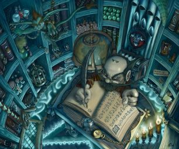
Page 138
"Impossible de mendormir. Une fois encore, lappel se fait entendre. Les ombres ensevelissent ma chambre. Jai froid. Jai peur. Quelque chose rôde dans mon esprit. Jai mal. Je dois cesser de penser. Les images défilent et me torturent. Mes veines enflent, elles me grattent. La douleur est insupportable, jai envie de pleurer. Je ne peux ... mes larmes se cristallisent. Encore une nuit de troubles. Au moins, jévite les cauchemars. Jai froid. Lappel se fait entendre. Je sors. Je marche dans la neige de Dun Morogh,sans trop savoir où mes pas me guident. Je mévade, dans ma tête, dun coup tout semble vide. Je tourne en rond. Mes mains me brûlent. Je hurle ... personne ne mentend. Le village dort. Le cimetière ? Quelque chose ... illumine la pénombre. Une silhouette fantomatique erre sur les tombes. Ses yeux encrés dans une lueur blanche percent lobscurité et me regardent. Je suis admiratif. Elle maspire vers elle, drapée dans une longue robe noire, flottante comme un ange, le visage masqué par lombre. Je la suis. Elle me guide. Mon pouls saccélère. Ma tête tourne. Ma vue se trouble. Je tombe et puis ... plus rien.
Insomnies ... maudites, lorsque le rêve métait offert à portée de main. Je ne ressens de mon réveil quune douleur atroce, encrée au fond de mon esprit, une Voix ... mappelle. Jai froid."
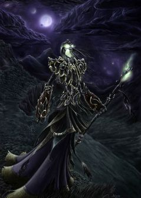
Page 147
"Les jours se sont écoulés. La Voix sest engouffré dans les limbes de mon esprit. Je souffre le mal davoir vécu trop longtemps seul. Personne ... na cru en moi. Personne ... na su reconnaître ma vraie valeur. Personne ne ma ... jamais ... aimé. Puisquils ne veulent pas de moi ... la Voix saura me donner raison. Ses conseils sont à prendre. Jai ... assassiné ma pauvre mère. Jai ... éliminé mes frères et mes surs. Jai ... réduit en cendres ce pitoyable hameau en cette nuit ténébreuse. Leur sommeil fut torturé par lhorreur que jai semée. Je me tiens, la bouche pleine de sang, à genou, dans la neige. Je nai ... plus froid. Je nai ... plus peur. Mes yeux se nourrissent de violence et je souris. Je marche. Là où ma vie a un sens. Je dois ... exister. Je dois ... prouver que je suis. Et je tuerai ... je tuerai encore ... pour cela. Je suis peut être ... soumis à la volonté de mon nouveau Maître, mais au moins ... jexiste."
Décade du Faucon [2]
[Radjah/Pensées de Manzo III Stormwind]
Page 153[Radjah/Le Drame d'Ombrecroc -- Suhaymah]
"Mon exil commence à porter ses fruits. La marche vers les royaumes humains fut longue et douloureuse mais jy suis parvenu. Devant moi se dressaient les portes de Stormwind, une capitale brisée par les guerres, reconstruite après la première invasion de la Horde. Une ville dominée par les légendes et qui attire les héros solitaires. Tout semble calme pour le moment : le capitaine Elvith et ses gardes font des rondes, les ménestrels mènent la danse et les mercenaires écument les tavernes à la recherche demploi. Je me faufile dans les foules. Les marchands hurlent leurs prix et parfois sarrangent avec quelques brigands pour piller les étals voisins. Je mène la visite des lieux, près de la banque, Zalkan et ses corsaires viennent rapporter leurs butins dans des coffres sûrs. Une étrange harmonie semble régner dans cette capitale. Tout le monde semble y avoir trouvé sa place, même cette jeune femme ... blonde, au visage masqué dun foulard rouge, qui collait des affiches un peu troublantes : «Chasseurs de Primes ». Voilà une activité qui risquerait dattirer les marginaux et de perturber les relations déjà établies.
La nuit tombe. Stormwind sendort. De nouvelles formes dactivités fréquentent les ruelles de la cité. Complots, meurtres, règlements de compte ... et la jeune femme masquée continuait à poster ses affiches."
Lors d'une froide nuit, au sud de Silverpine, il y a vingt trois ans ...
La peine s'engouffrait dans les regards des villageois de Pyrewood. Cette contrée, épargnée par bien des maux, observait le fort d'Ombrecroc se faire consumer par les flammes. D'en bas, on pouvait distinguer les silhouettes hurler et préférer se jeter des meurtrières du donjon plutôt que de mourir par le feu. La mort par les flammes est la pire, à ce que l'on dit : tandis que les nerfs sont sanctionnés par la douleur, on s'éteint lentement dans d'atroces souffrances et l'étouffement finit par nous emporter. C'est à ce triste sort que le Seigneur d'Ombrecroc, ainsi que toute sa famille et ses serviteurs, furent abandonnés.
Plus tard dans la même nuit, la pluie et le manque de matière à consumer vinrent à bout des flammes. Toutefois la fumée et la chaleur rendait la respiration difficile. Dans les décombres, au milieu des cendres, quelques hommes en expéditions découvrirent avec stupéfaction la présence d'une petite fille aux cheveux blonds. Elle avait la mine barbouillée de suie, des plaies légères sur le visage, rien de grave. En revanche, son dos était gravement brûlé. Elle restait silencieuse à observer une petite araignée qu'elle poussait avec ses doigts. Le regard vide de toute peine, l'enfant probablement inconscient des faits ou au contraire encore sous le choc, continuait à jouer avec l'insecte.
"Ce ... ce n'est pas possible, s'inquiéta l'un des expéditeurs, cette petite fille a survécu au drame. Mais regardez son dos, il ne faut pas s'attarder ici, descendez là au village"
Alors qu'il tendait son bras vers l'enfant, il s'arrêta brusquement :
"Attendez, qu'est ce que ... c'est quoi ça ? "
Des centaines d'insectes sortaient de la bouche de la petite fille pour l'enssevelir sous une sorte de bouclier naturel. Les araignées se mirent à sécréter une toile de couleur écarlate autour de l'enfant qui restait calme et confiant sous le regard horrifié des expéditeurs. Le spectacle dura quelques minutes avant que les araignées ne se retirent et que la toile se déchire. Les plaies avaient disparu. Les brûlures sur son dos ont cicatrisé.
La petite fille fut ramenée à Pyrewood chez le doyen Jerode. Ce vieillard encore agile, doté d'une connaissance sans égale dans tout Silverpine, hocha la tête lentement. Il sourit à la petite fille en s'adressant à l'homme qui l'avait découvert :
" C'est la fille du Seigneur Ombrecroc. Je vois qu'elle a bénéficié de ses pouvoirs héréditaires, je dirais même qu'ils sont incroyablement intensifiés pour son âge. Sa famille était déjà obscure, ce pouvoir les a consumé dans la folie et je suspecte l'Inquisition d'avoir enflammé leur donjon à des fins préventives. Tu dois la protéger, d'elle même et de l'Inquisition. Dès demain, ta jeune fiancée et toi, vous partirez à Gilnéas. Ce royaume est le plus sécurisé et l'Inquisition n'y a pas d'influences. Pyrewood financera votre vie là bas. Nous baptiserons cette petite fille Suhaymah, la Tisseuse d'Ombres.
- Jerode ... crois-tu qu'elle ...
- Ne te pose pas trop de questions Ibnûn. Aime-là comme ta propre fille, conduis là vers une voie noble, une vie sage et heureuse.
- Bien, il était temps que Gamaë et moi quittions le village et fondions une famille. Gilnéas sera notre Terre d'Accueil. Bonne nuit Jerode."
Le vieillard regarda l'homme s'éloigner de lui, le regard plein de sagesse et un sourire tiré au coin des lèvres.
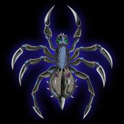
Le lendemain, Ibnûn et Gamaë partirent avec la petite fille, toujours silencieuse. Elle observait la route qui menait aux ramparts de Gilnéas. Les gardes du royaume sont incorruptibles, la politique intérieure est sévère. Gilnéas est une province solitaire, qui n'agit que pour son propre intérêt ... le roi Genn Greymann reste fier et orgueilleux mais sa puissance militaire est telle qu'aucun groupuscule ou influence politique ne se permet d'entraver sa royauté.
Bien des années plus tard, le Donjon d'Ombrecroc fut investi par l'Archimage Arugal qui s'apprétait à mettre sur pied une armée de Lycans.
Lune de l'Esprit [3]
Décade de la Chouette [2]
[Radjah/Pensées de Manzo IV Le Cocon]
[Radjah/Pensées de Manzo V Les Chasseurs de Primes]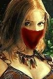
Page 159
"La jeune colleuse daffiche sappelle Suhaymah. Elle est fragile mais elle cache sa douceur derrière un masque de marbre. Son cur, de glace, se réchauffe durant son sommeil durant lequel elle amorce quelques paroles tristes ... elle raconte lhistoire de sa souffrance en battant légèrement des cils, agitée durant la nuit. Je lai vue dormir et je lai écouté : son histoire, celle dune petite fille, blonde, dont lhéritage fut le fruit de manipulations et de drames. Elle est là, seule, dans son cocon, à ressasser sans arrêt les mêmes horreurs dans un sommeil perturbé. Elle nest ici que par vengeance et souhaite rassembler à Stormwind une équipe de tueurs marginaux et sans scrupules qui laideraient à mettre la main sur ce quelle convoite : Six personnes, six mercenaires, six qui lont trahi dans le passé. Ils étaient sa seule famille durant un temps et lauraient revendu aux Sorciers du Kirin Tor pour quils étudient son héritage et son lien avec les Araignées. Je nen sais pas plus, et la voilà perdue dans des rêves sûrement plus agréables. Quand elle sortira de son cocon, jaurais disparu, emportant avec moi quelques bribes de souvenirs quelle ma confiés, ce nest pas un hasard. Mon Maître saura guider mes pas. Quelque chose me dit quici ... on est sur le bon chemin."
Page 164
"Depuis quelques temps, Suhaymah a fait parler delle et quelques mercenaires solitaires se sont rattachés à elle. Les Chasseurs de Primes, dont le symbole est une araignée dorée, ont commencé à exécuter les contrats. Jai suivi certains dentre eux ... dans les voies les plus sombres de leur métier : Alicéa, la Veuve Noire, semblait forgée dans la pierre, ce nétait même pas largent qui lintéressait mais lappât du sang. Un prêtre noir du nom de Denzel, calme et serein, faisait peser lambiance autour de lui, il a létoffe dun bon dirigeant et ses conseils devraient être de bonne augure. Des chasseurs, des meutes, Straken et ses loups étaient les pires traqueurs dAuberdine. Smaug savait où trouver les informations, petit mais peu discret, il parvenait toujours à ses fins. Je me souviens également ... dAaron, le grand brun ténébreux, le tortionnaire, professionnel dans la torture silencieuse. Ils furent nombreux à tatouer sur leur corps leffigie de lAraignée. Daucuns ont disparus, dautres se sont affranchis, mais elle évolue toujours ... cette organisation a tissé de nombreux liens. Suhaymah et Jouanne, la plus jeune de la bande, étaient devenues très complices. Les contrats défilaient les uns après les autres : Du meurtre dAyany à la protection de Gilda et Lianrhyn, de lespionnage pour le compte dArgrima mais encore le passage à tabac de lArchimage Altaran et la séquestration de Télima. Mais la jeune femme blonde, navait pas perdu de vue ses objectifs et poursuivait ses recherches dans lombre ... jusquau jour où une jeune elfe aveugle refit surface ... à Stormwind. "
Décade de la Baleine [1]
[Radjah/Le Bosquet Caché Llaena Nightsorrow]
Il y a 13 ans ... dans les forêts éloignées de Quel Thalas
Llaena Nightsorrow, une petite fille elfe âgée de sa quatrième année, chantait et dansait gaiement au milieu des arbres florissants. Le vent caressait les feuilles tandis que lespoir guidait le regard de sa famille. Les nouvelles du front étaient bonnes. Brandevin, le frère de la petite, fut envoyé de lautre coté de la Porte des Ténèbres pour soutenir leffort de guerre et repousser la Horde une fois pour toute. Cest dans un petit colis finement emballé quil lui a fait parvenir, ce matin même, une petite fiole contenant un échantillon de terre de Draenor et un petit champignon. Heureuse, elle continuait à rire au milieu des éléments mais lombre a voilé son visage lorsque sur le chemin du retour, elle considéra avec effroi que tout le clan Nightsorrow avait été décimé.
Des cadavres mutilés, broyés, brûlés, démembrés, jonchaient les pas de portes. Du sang sur les murs. Des larmes sur le sol. La petite fille avançait, serrant sa petite fiole au creux de ses mains, loeil humide et le visage marqué par la peur. Elle se précipita vers le centre du village fantôme, esquivant les dépouilles de sa famille, de ses amis et du reste de son clan. Elle tremblait. Arrivée sur la place, près du puits, elle se figea. Ses parents étaient au sol, toujours vivants, les doigts amputés, le regard vide. Sept ombres menaçantes se tenaient autour deux : Deux frères sanguinaires orcs, des renégats, des fugitifs, qui portaient le tatouage du Clan « Burning Blade » ; un troll sombre qui fut interpellé « HenJin » ; mais également une haut-elfe, comme ceux du clan Nightsorrow, prétentieuse, orgueilleuse et au regard moqueur ; un gnome, petit, grognon, et maladroit, très impulsif ; une vieille femme, la chef, celle qui semblait diriger les six autres, une sorcière, séduisante pour son âge ; et pour finir, une petite fille dune dizaine dannées, curieuse, silencieuse, plus froide que les autres, elle se contentait de jouer avec une petite araignée en écoutant la scène de torture dune oreille distraite. Llaena sculpta à tout jamais le visage de ces sept assassins dans sa mémoire avant de courir naïvement vers les corps agonisants de ses deux parents.
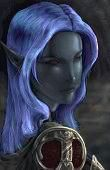
Les larmes ruisselaient le long de ses joues. Son père la rejeta du peu de force qui lui restait, écroulé sous les coups. Elle ne comprit pas. Elle fut incapable de bouger, incapable de senfuir, incapable de crier. Paralysée, par la peur, par la douleur de voir ses parents dépossédés de leur honneur. La vieille femme prit Llaena par la main, la serra fort puis écrasa son pied sur la tête du père de la petite fille :
« Alors... le gardien garde-t-il mieux son trésor ... que ses secrets ? »
Le haut-elfe, secoua la tête.
« La vie de ta fille, moins importante que la position dun bosquet ... »
Elle coinça la tête de Llaena contre son buste, faisant jaillir des flammes du bout de ses doigts, puis lui brûla les yeux lentement. Les hurlements de la gamine ont traversé le village, souillant le silence sylvestre qui se dégageait des contrées du Quel'Thalas. Lorsque la torture fut achevée, les supplices accomplis, les parents sont passés aux aveux, nayant pas supporté dentendre leur petite fille supplier. Avant de disparaître dans la brume, les sept mercenaires les ont exécuté, laissant dépérir Llaena, seule, les yeux ensanglantés, au milieu des cadavres.
Treize années se sont écoulées ... et une jeune elfe, aveugle, peine à trouver ses repaires dans les sentiers elfiques de Darnassus avant de reprendre la route vers la Cité de Stormwind.
Décade du Lapin
Troisième Ère [9]
Lune de la Force [9]
Décade du Panda
Décade du Gorille
Décade de l'Ours [9]
Chronologie d'Outremonde
Chronologie approximative dOutremonde :Témoignages dOutremonde (Part I)
0000 Avènement dOutremonde par les Titans de Sable
1700 Apparition des premières races dites intelligentes : les Sauriens
2000 Dautres races telles que les Changeformes émergent
3400 Union des peuples des profondeurs
3405 Fondation de lEmpire de Profondorme
3470 Emergence des civilisations « humanoïdes » de Shazat
3500 Guerres intérieures du désert de Shazat (Ormanie actuelle)
3570 Exil du Seigneur Zhahâm, vaincu par le seigneur Ormân
3580 Fondation des Royaumes dOrmanie
3600 Etablissement dun commerce entre les Sauriens et Profondorme
3650 Fondation dAlkhabad, la Citadelle Noire par les armées du Seigneur Zhahâm
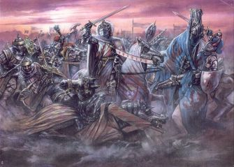3660 Assassinat de Zhahâm, son fils Sarmate devient Roi dAlkhabad
3780 Guerre déclarée aux Changeformes par les Zhahâmets
3784 Naissance de Nakhim, 1er fils de Sarmate
3786 Les survivants Changeformes se réfugient en Profondorme.
3790 Les peuples de Profondorme sallient avec les Orméniens
3800 Naissance de Radjah, 2nd fils de Sarmate
3805 Création de « La Main de Sarmate » pour protéger la famille royale
3810 Nakhim devient le Chef des Armées
3812 Naissance de Souhad, 3ème fils de Sarmate
3813 Les Armées dOrmanie veulent mettre un terme à la menace Zhahâmet
3815 Les Sauriens et lEmpire de Profondorme soutiennent le Roi Ormân
3817 Nakhim dirige lArmée dans les déserts Sauriens
3818 Grande Bataille du Désert de Kharmat entre Zhahâmets et Sauriens
Bataille du Désert du Maïzern, défaite des Sauriens
3820 Mort de lépouse de Sarmate, la Reine Shaazane
3821 Les Orméniens et les armées de Profondorme assiègent Alkhabad épaulés par quelques Sauriens et survivants Changeformes. Une pluie de flamme sabat sur la Citadelle Noire : les Sorciers Eredars investissent le champ de bataille créant la dissolution des armées Orméniennes et de Profondorme. La « Main de Sarmate » parvient à repousser les Infernaux qui envahissaient Alkhabad.
3822 La Légion Ardente sinstalle en Outremonde et conclut une alliance avec lArmée Zhahâmet. Les Eredars équipent les soldats darmures en Veineroche et incitent le Roi Sarmate à écraser définitivement les autres peuples.
3824 Eradication totale des nomades Sauriens par les troupes de Nakhim.
3830 Bataille de Profondorme qui dura plus de trois ans et se résolut par une victoire des Zhahâmets.
3833 Les Seigneurs dOrmanie succombent les uns après les autres. LArmée Zhahamet parvient au dernier bastion, la forteresse du Roi Ormân. Défaite du Roi Ormân.
3840 Ouverture de Portails vers dautres Mondes.
3850 Les Zhahâmets et autres races belliqueuses entreprennent de nouvelles conquêtes pour les Sorciers Eredars. Ces derniers convoitent de nombreuses sources magiques. Leurs armées vont de mondes en mondes pour étancher leur soif de puissance.
4050 Bataille du Monde de Shazanûn entre les Zhahamêt et les Gardiens. Nakhim meurt au combat en tentant de sauver sa compagne Maëwah. Extermination de son armée.
4053 Les Gardiens de Shazanûn passent à leur tour le Portail et assiègent la Citadelle Noire. Ils en font une Prison de par leur magie, une Prison dont chaque nuit est faite de cauchemars et chaque jour de tortures psychologiques, la notion de temps nexiste plus, ni vieillesses, ni naissances ne sont possibles. Le Roi Sarmate fut quant à lui exécuté.
Alkhabad, la Citadelle Noire, Prison et Désolation
« Nul ne peut dater les événements qui ont suivi tant le temps passé fut long. Aussi on ne retiendra que, bien des millénaires plus tard, tandis que le Temps était figé en Outremonde, une Sorcière en Azeroth sintéressa de près à lhistoire des Zhahâmets dont les écrits furent rapportés par les démons de la Légion Ardente lors de leur invasion.»
Témoignages dOutremonde (Part II)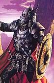
Page déchirée dont seule la fin est lisible, 3833
« ... ne cessaient de reculer face aux armées ténébreuses du Roi Sarmate. La bataille était engagée depuis deux jours et deux nuits, nous épuisions nos dernières ressources et lennemi paraissait toujours plus nombreux. Les envahisseurs Zhahamets, aux armures détaillées, fondues dans la Veineroche, leur conférait une résistance peu comparable. Notre nombre samenuisait. Je voyais mes hommes plier, mourir, agoniser et face à nous le Chef des Armées, le général Nakhim ESawin et sa sombre compagne, la Lame Noire, dame Maëwah. Elle se tenait, belle et provocante, avec la « Tranchante », cette fidèle épée meurtrière qui fut le fléau de bien des Seigneurs dOrmanie. Nous étions le dernier bastion de cette civilisation, prêt à tomber. Les Zhahamets ont juré la perte des « peuples faibles » dOutremonde, au tour des Orméniens de succomber à leur soif de vaincre, après les Changeformes et les sentinelles de Profondormes. Ils finiront seuls dans leur bataille. Ils finiront seuls et se déchireront ensuite...»
Sentinelle de Profondorme
Recueil dimages et description dOutremonde, 3792
« Outremonde est un immense désert de sable, peuplé de créatures étranges. Il nexiste que cinq civilisations dites « intelligentes ». Les Changeformes sont de petits êtres pacifiques qui ont adopté leur nom en fonction de leur capacité à prendre les formes quils touchent ou quils inhalent. Les Sauriens sont des semi-écailleux, de grands lézards nomades du déserts qui sattaquent aux convois solitaires. Les Profondormes sont une espèce sombre qui vivent dans les souterrains, loin sous le sable, là où la température est plus fraîche et les cavernes bien creusées. Les Orméniens constituent une civilisation construite de plusieurs royaumes et dune armée conséquente. Elle est la plus évoluée des cinq en terme de technologies et de culture. Quant aux Zhahamets, ce peuple fier et belliqueux, dirigé de main de fer par le Roi Sarmate, naspire quà la domination suprême dOutremonde, leur armée est sans doute la plus puissante bien que cette civilisation ne possède quun seul bastion : la Citadelle Noire, Alkhabad. »
La Main de Sarmate, daprès Fhaëae, espionne de Profondorme, 3807Témoignages dOutremonde (Part III)
« La Main de Sarmate est une organisation restreinte et influente dans les esprits terrifiés dOutremonde. Il sagit dune main à sept doigts, sept mercenaires sur-entraînés dans des conditions insoutenables, dans un seul et unique but : assurer lentière protection de la famille Royale et exterminer les menaces potentielles.
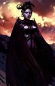Alimentés par la haine et la dévotion, ils ne négligent aucun détail et les septs réunis constituent un mur infranchissable à toute trahison interne. Shinux est le plus irritable, surnommé le téméraire par son manque de sang-froid. Vladimir un grand ténébreux au visage masqué, il draine la vie de ses victimes grâce à une arbalète enchantée. Mishun est particulière, elle ressent la moindre égratignure qui pourrait errafler le corps de ceux quelle protège, elle maitrise les soins à la perfection. Mazarus est le doyen de la Main de Sarmate, le meilleur ami du Roi. Les jumeaux Skeld et Fhermeth sont liés tant par lesprit que par la force. Quant à la septième, Merenptah, est la plus maléfique. Fourbe et sournoise, elle torture ses victimes par pression psychologiqueet physique. Cette chose a cotoyé les limbes de l'Enfer de très près ... »Merenptah, la Septième
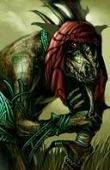
LArrivée des Eredars en Outremonde, par un Orménien, 3821
« ... la terre entière se mit à trembler durant la bataille, le ciel devint ténèbres et une pluie de flammes sest abattue au loin sur la Citadelle Noire, Alkhabad. Nous vîmes les Zhahamets résolus à sonner le Cor et faire appel à leurs troupes dElites. Nos alliés Sauriens qui attaquaient de front revinrent, précipités, vers nos rangs, alarmés par quelque chose de bien plus effrayant que lArmée de Sarmate. Quelque chose se tramait à lintérieur de la Cité mais nous napercevions que des bribes déclairs percer lobscurité de cette « nuit » soudainement tombée.
« - Des ... démons ! Les Ssssorciers Eredars et leurs Infernaux ! » hurlaient les Sauriens.
Cela suffit à provoquer une peur panique et à dissoudre les lignées Orméniennes et celles de Profondorme. Les Zhahamets en profitèrent pour percer nos rangs, le Général Nakhim ESawin ne nous épargna pas la retraite de nos troupes et la moitié de nos effectifs périrent en tentant de fuir. Cest ainsi que nous comprîmes à quel point nos ennemis se battraient jusquà la mort, quand bien même leur propre Citadelle semblait menacée, leur armée déployée sur les terres Sauriennes ne leur vint pas en renforts. Il parait que la Main de Sarmate a été mobilisée pour contrer les attaques "Infernales". Ce qui se passe là bas ne présage rien de bon pour Outremonde. Ces choses qui tombaient du ciel nétaient pas venu pour éradiquer ... mais pour conclure une alliance. »
Témoignages dOutremonde (Part IV)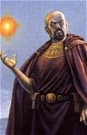La naissance de lEcorcheur, par Mazarus,
4ème de la Main de Sarmate, 3820
« Parmi les trois frères, Nakhim était le plus malin et Souhad le plus talentueux. Il ny avait guère de place pour Radjah dans le coeur du Roi Sarmate. Sans cesse rabaissé, disposé à la compétition, bercé par la rancoeur, lenfant sassombrit peu à peu. Mais la naissance de lEcorcheur, la terreur même, est reliée à la mort de Shaazane, mère de Radjah et épouse de Sarmate. Je fus témoin de la scène ... scène qui restera à tout jamais gravé dans ma mémoire tant elle fut difficile et éprouvante :
« Cesse de pleurer comme une larve, Radjah, tu es un faible, un minable » lança le Roi Sarmate à son fils, devant lassemblée complète qui se tenait autour de la Reine défunte. Nakhim restait impassible, droit et fier. Souhad, de sa huitième année, nesquissa pas une larme. Seul Radjah, abattu au milieu de la pièce, genou à terre, le regard enflammé, hurlait sa tristesse sans retenue. Nakhim intervint violemment, tabassa son frère pour quil se relève. Mais chaque fois, Radjah se remettait en position, acharné à rendre hommage à sa mère. Nakhim perséverait : « Il ny a que les faibles ... qui meurent, pauvre idiot ! ». Les Sept de la Main de Sarmate contemplaient la scène, attendant lordre de réagir. Mais le Roi Sarmate laissa Radjah se faire humilier jusquà labandon. Il nen fut pas ainsi. « Ta mère, ma trahi, et tu pleures ... encore ? ». Radjah se balançait nerveusement par dessus le corps de sa mère, roué de coups, répétant pour lui même « Ni faibles, ni traîtres ... ni faibles, ni traîtres ... elle nétait ni faible ... ni traître ». Il se releva, et dans un élan de colère, terrassa Nakhim puis élimina en quelques gestes la ruée de gardes qui sétaient abattus sur lui. Il embrasa une partie de la Citadelle Noire et s'enfuit au beau milieu des flammes. Cest finalement la Main de Sarmate qui fut contrainte à le maîtriser après qu'il ait disparu durant trois semaines.
Le Roi Sarmate avait fait assassiner son épouse parce quil la soupçonnait de trahison. Radjah était très lié avec sa mère, cest la seule qui lencourageait alors que toute lattention était reportée sur ses deux frères. La mort de Shaazane a provoqué une fissure sentimentale, un gouffre affectif tel ... que Radjah, lEcorcheur, terrifiait les autres Zhahâmets par son comportement, calme, réfléchi et vorace. Mais nous lappuyions, nous, la Main de Sarmate, parce que nous savions ... quil guiderait un jour, les vestiges de notre peuple. »
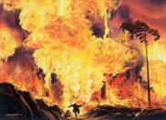
La naissance de l'Ecorcheur, l'embrasement de la colère
La compétition entre Nakhim et Radjah, par Mazarus, 4ème de la Main de Sarmate, 3815
« Nakhim était sans contestation possible, le plus fort et le plus malin. Attaché à Maëwah, sa compagne, il ne vivait que pour la défendre, cest véritablement celà qui le poussait à devenir plus fort, toujours et encore. Il ne nourrissait damour que pour elle et ses deux frères. Cest pour celà quil décida de prendre en main lentraînement de Radjah. Mais les méthodes de notre peuple sont basées sur la compétition et lhumiliation. Aussi il était fréquent de voir Nakhim rabaisser Radjah lorsque ce dernier échouait et les punitions étaient conséquentes.
Radjah persévérait naïvement et se confiait souvent à sa mère :
« Si mon Frère ma dit de frapper 100 fois, je le ferais 1000 fois ! Je serais plus fort que lui. Je serais plus fort que Nakhim et je deviendrais Chef des Armées !
- Ton frère est dur, ton père lest tout autant ... mais ne perd pas de vue ta propre personne, mon Fils. Souhad et toi, avez besoin de vous comprendre vous même avant tout.
- Ce que je comprend, cest que Nakhim ne défend que Maëwah, mais moi, cest mon peuple que je veux défendre ! Les Orméniens ne passeront pas ces murailles ! Jamais !»
Nakhim délaissa son frère lorsque la guerre contre les autres peuples fut déclarée. Il menait la campagne des Déserts Sauriens tandis que moi, Mazarus, le 4ème de la Main se Sarmate, fus nommé pour perfectionner les arts de combats de Radjah. Je devins son mentor et confident, il avait bien plus de talent que le préconisait son père et les généraux Zhahâmets. »
Combattants Sauriens, le Désert Froid du Maïzern
Témoignages dOutremonde (Part V)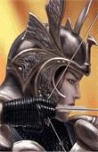
Maëwah, compagne de Nakhim E'Sawin
Le dernier souffle de Nakhim, par Mazarus, 4ème de la main de Sarmate, 4050
" La Légion Ardente nous avait ouvert les portes vers bien dautres mondes pour que nous puissions étendre notre Puissance. Notre dernière conquête serait Shazanûn mais nous étions trop sûrs de nous. Nakhim et Maëwah ouvrirent la Marche et nos armées déferlèrent sur cette nouvelle terre hostile, en quête de sang et de dévastation. Mais les Zhahâmets furent très vites contrés par les habitants déchaînés de Shazanûn. Ces sorciers neurent aucun mal à stopper notre avancement si bien que la bataille qui fit rage tourna rapidement à leur avantage. Le régiment de Maëwah fut encerclé, la ténébreuse compagne de Nakhim fut transpercée de douze carreaux ensorcelés avant de tomber agonisante. Cest dans un cri de colère effroyable que le Chef des Armées, Nakhim, enfonça avec peu de ses hommes les lignes ennemies pour la rejoindre.
« Maëwah ! Relève toi ! Maëwah ! » peinait-il à prononcer en repoussant ladversaire.
Les forces de Shazanûn lencerclèrent rapidement. Jai vu Nakhim porter dune épaule, la dépouille agonisante de sa compagne, tentant en vain de rejoindre les lignes arrières des armées Zhahâmets. Lunique objectif était le Portail. Le Chef des Armées, qui fut si fort dans les esprits de ses hommes, mit un terme à sa crédibilité, laissant échapper des larmes de colère, de tristesse et de rancoeur. Il hurlait de désespoir tandis que nos armées tombaient sous lavancée des troupes adverses. Nakhim ne se laissa pas abattre facilement, il fallut à lennemi beaucoup dacharnement pour mettre le tyran à terre qui, pour sauver Maëwah, avait décuplé ses forces en dépit de la stratégie. Nous aurions pu reprendre le dessus, au sacrifice du régiment de sa compagne certes. Manifestement il nous avait tous condamné, par sa folie, à fuir ou à mourir. Il périt, transpersé de mille lames ardentes et mutilé des pires sortilèges. Sa souffrance na eu dégale que son imprudence. Radjah se tenait là, le regard enflammé, à mes cotés, déçu par la faiblesse de son frère. Nous pensions que cen était fini de nous mais le Seigneur de ShazAnûn ordonna à ses sorciers darrêter le massacre. Il se pencha sur le corps de Nakhim, prit la Lame et sapprocha de Radjah pour la lui tendre.
Leurs armées nous laissèrent une route vers le Portail, pour que nous avertissions le Roi Sarmate de la mort de son fils et de léchec de son armée. Quelle humiliation ... quel déshonneur. Radjah serra la Lame de Nakhim dans sa main, impassible. Notre retour à Outremonde, fut des plus lamentables ..."
Nakhim E'Sawin, Chef des Armées
Lettre destinée à Souhad, le Prince Noir, par Nadiah, 3822
« Je ne sais par où commencer ... les mots, eux, ne peuvent être timides.
Alors jécris le fond de ma pensée, censée me rassurer, briser mes liens rigides.
Pourtant je suis pleine de désir, je crois être amoureuse, non, jen suis sure.
Chaque fois que lon se croise, mon regard se détourne, comme face à un mur.
Jai besoin de te le faire comprendre, jai besoin que tu le saches enfin ...
De toi, je nai rien à attendre, aussi je peux nourrir mon amour sans fin.
Si tu men veux, si tu moublies, je suis prête à tout recevoir, même le pire.
Jai peur ... mais cest dun pas certain que je te montre ce que je peux offrir.
Jai peur ... que celà change quelque chose car nous étions meilleurs amis.
Jai peur ... mais il ny a en ce monde quune rose, celle de pouvoir partager ta vie.
Jattend, impatiente ... Souhad, je me sens idiote et naïve de croire encore ...
Que damour tu puisses donner, quun coeur puisse amener le désir dun corps .
Je serais génée, par la suite, pardonnes moi davance mon comportement.
Jai besoin de réconfort, je ne veux pas dun sourire qui en quelque sorte ment.
Je ne souhaite que ton bonheur, mais quavec moi tu sois honnête ...
Dis moi si jai une chance, dattiser en toi, les sentiments que je reflète.
Aussi, il est temps de partir, de mettre un terme à cette lettre que je parsème
De mille baisers ... sache que depuis longtemps, tu es le seul que jaime. »
Témoignages dOutremonde (Part VI)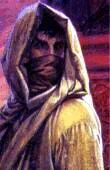
Lenfant du désert, par un scribe Saurien, 3660
« Nous étions nomades, ces déserts nous les connaissions par coeur. Nos caravanes sétendaient depuis le désert glacé du Maïzern jusquaux sables brûlants de Shazat où nous commercions allégrement avec le Royaume dOrmanie. Il était peu fréquent de croiser dautres tribus que la nôtre et pourtant les conditions difficiles de ces voyages ne nous épargnait pas détranges rencontres. Je me souviendrais toujours de cet enfant, au visage masqué qui nous observait de loin sur un rocher. Ce nétait pas un reptilien, ni une créature de profondorme. Soit un exilé dOrmanie, soit ... un enfant des contrées obscures du Seigneur Zhahâm. Il portait avec lui, un lourd fardeau. Son regard sétait éteint mais se raviva rapidement de quelques flammes lorsque nous nous approchâmes. Il ne comprenait pas notre langue et la sienne ... nous paraissait si éloignée de ce que nous connaissions..
Il portait avec lui, une arme bien étrange, imprégnée de sang. Il revenait du sud, là où le soleil a fait place à lombre. Le royaume oublié du Seigneur Zhahâm. Lenfant semblait épuisé, aussi nous lui avons offert pitence et hamac pour quil se repose. Mais les Sauriens qui maccompagnaient se posaient beaucoup de questions. Il représentait une menace potentielle, aussi notre chef Ywazakllnar, a préféré fouiller les affaires de notre mystérieux invité. Il y a un trouvé un anneau gravé dans la langue de Shazat, portant le nom de « Zahâm ». Les Sauriens furent terrifiés, lenfant aurait dérobé un artefact au plus tyran des Seigneurs dOutremonde. Peut être que les armées sont déjà en marche, peut être que lenfant a été suivi. Nous ne devions pas rester un instant de plus ici. Nous décidions de tout abandonner ici, emportant le minimum de notre caravane, reprenant la route ... laissant au beau milieu du désert, un enfant au visage masqué, sur un hamac.
Nous apprîmes par la suite la mort du Seigneur Zahâm. LEnfant était son fils. »
Une Sphère qui s'engouffre dans le sable
Les cauchemars de Souhad, par Shaazane, épouse de Sarmate, 3817
« Ces derniers temps, mon fils cadet semble perturbé. Il rêve dautres mondes, dautres contrées. Il men parle. Il me les dessine. Mon fils ... perçoit les guerres, il les ressent. Ce nuits sont troublées par des cauchemars récurrents. Toujours les mêmes scènes : une petite fille, blonde, aux pouvoirs immenses. Une dame, vétue de noir, sombre. Des portails, beaucoup de portails. Des armées ... les nôtres, mais pas seulement, des choses qui tombent du ciel. Des flammes. Du sang. Des horreurs qui sortent du sol. La mort. Les morts. Cest un cercle. Cest un cycle. Lhistoire se répète. Un trou immense où il ny a nulle vie ... mais où il y a de lexistence. Des démons, peut être ? Il a peur. Il crie toutes les nuits. Maëgwen ! Maëgwen ! Ce nom revient dans sa tête, quelque chose de répété ... en quelle année sommes nous ? Qui sommes nous ? Notre raison de vivre le dépasse. Il ne comprend pas. Il ne comprend plus. Son frère. Nakhim ? Si dur et Radjah ... si ambitieux. Il est là, il se sent seul. « Seuls ... vous nêtes pas seuls ... vous nêtes pas seuls ». La petite fille blonde revient. Elle garde le secret ... le bonheur ? La clef du bonheur peut être. Quelque chose hante encore son esprit. Une sphère, une Prison. Elle s'engouffre dans le sable. Les nôtres hurlent. Puis dans un lointain futur, des mercenaires.Ils sont nés pour tuer. Une porte vers un autre monde. Il croit en lamour. Souhad croit en lamour. Il ne comprend pas son père. Pourtant il est celui qui lui succédera. Le Prince Noir. Oui. Mais pour linstant il est jeune et se pose pleins de questions. Il sera un grand Roi. Il sera ma fierté. Mon fils ... que tes nuits sapaisent. Car peut être cest lavenir que tu perçois et de cette force tu tiendras notre Royaume et forgeras lécorce de notre destinée. Que tes nuits soient douces, que tes cauchemars servent à nous construire. Pourtant chaque matin, il regarde le ciel ... comme dans ses dessins. Il attend que quelque chose ... tombe"
Témoignages dOutremonde (Part VII)Le Roi Sarmate
La Prison, par Zahrkh, Seigneur de Shazanûn, 6051
« Nous les tenions, par delà même le Portail qui nous les avait amenés. Les armées Zahamêts, même découragées, ne se rendirent pas, la Citadelle Noire refusait de plier sous nos sortilèges les plus dévastateurs. Nous savions quils se battraient jusquau bout alors nous décidâmes de combiner le flux des arcanes de nos plus grands combattants. Le rituel fut long et éprouvant, nous devions accumuler une quantité effroyable dénergie pour créer la Sphère dEmprise.
Ce sort, dans toute lhistoire de notre peuple, na jamais été matérialié, aussi nous doutions de la théorie et des fondements de celui-ci. Dans des proportions de désespoir telles que celles ci, nous navions dautres choix ... que de les exterminer, ou les emprisonner, de manière à ce que plus jamais ils ne nuisent à dautres peuples. Nous ne sommes pas comme eux, aussi le génocide nous paraissait inconcevable. Tandis que la Sphère dEmprise se cousait peu à peu de fils enflammés autour de leur Citadelle, lennemi ne prêtait pas attention à notre stratagème, trop occupé à repousser nos combattants en dehors de leurs murs. Manifestement, le Roi Sarmate fut capturé par les nôtres et exécuté alors que la Prison se refermait sur eux, figeant le Temps à tout jamais. Le poids magique de la Sphère la fit senfoncer sous les sables hurlants du désert. La Citadelle Noire sengouffra et les vagues de dunes lensevelirent avec les souvenirs de ce peuple et quelques uns de nos sorciers, sacrifiés à lintérieur de la Sphère. »
Un dernier Espoir pour notre peuple, Mazarus, 4ème de la Main de Sarmate, sans date.
« Jignore en quelle année nous sommes. Il se pourrait bien que lon ait passé des millénaires enfermés, enfouis sous les sables dOutremonde. Il se pourrait aussi que nous soyions ici depuis quelques minutes seulement. La notion du Temps a réellement été effacée. Ici, chaque seconde est une torture psychologique, les images nous envahissent, lacérant lesprit, le tordant de douleur. Chaque nuit, nous ressassons nos pires craintes. Impossible déchapper au contrôle de la Sphère et à ses cauchemars. Etrangement, Souhad, lui, nen faisait plus. Je lobservais, lorsque javais la force de contenir mes pensées. Il semblait parler tout seul. Mais un nom ressortait régulièrement, celui de Maëgwen. Une issue ... une sortie, vers lextérieur. Je parvins par le biais de mon journal à faire comprendre à Souhad quil détenait la clef de notre cellule. Si cet être était capable de communiquer à travers les mondes, ou au travers des plans, il pourrait être tout aussi capable de tisser les liens et créer une brèche éphémère. Jignore combien de temps nous avons passé à élaborer ce plan. Souhad nous a prévenu que seuls six Zhahâmets pourraient franchir la brèche. Mais que leurs enveloppes corporelles seraient altérées et adaptées à celles de lautre monde.Que leurs forces seraient amenuisées et que pour finir, ils devraient remplir trois conditions avant de recouvrer une grande partie de leur Puissance.
« Seulement six ? intervint Mishun
- Seulement six ! confirma Souhad. »
Le débat fut long. Radjah et Merenptah restèrent silencieux. Je leur proposai daccompagner l'expédition, car mes connaissances des autres mondes sont les plus vastes. Mishun, pour ses dons particuliers en soins serait aussi très utile. Et deux piliers, en matière de combat, Shinux et Vladimir. La composition fut approuvée par tous. Une fois là bas, nous trouverions un moyen de libérer le reste de notre peuple. Devant nous, souvrirent les voies dun nouveau monde, dans lequel nous ne pourrions combattre quen nous y intégrant. Cétait notre dernier espoir.»
Les vestiges d'un autre monde, le rêve de Souhad
La Liche et lEcorcheur, par Manzo.Témoignages dOutremonde (Part VIII)
« Mon Maître ma ordonné de partir, quitter nos terres où nulle vie ne peut pousser. Mon Maître sait quil peut avoir confiance en moi. Petit, je le suis, alors je me faufile partout. Les informations ne méchappent jamais. Je fouille, tavernes et bibliothèques, mon savoir est universel. Mon talent na dégal que ma discrétion. Mon périple ne fait que commencer ...
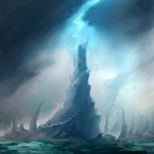
Jai découvert avec passion et curiosité, le mystère des portails. Bien des choses se sont révélées à moi. Draenor. Xoroth. Outremonde. Maelgar. Jai recueilli tout ce que je pouvais. Tout ce que jai trouvé dans les vestiges laissés par les Nathredims. Des plus intéressants, les témoignages dOutremonde nous ont été rapportés par linvasion de la Légion Ardente, récemment vaincue au sacrifice de lArbremonde. Azeroth est une fissure, fragile, qui se déchire encore après toutes ces années de guerre. Une entité bien plus redoutable tentera un jour dasseoir à nouveau sa domination. Dans les contrées glaciales de Northrend, jai désiré la servir, symbole de toute véritable puissance. Le Roi Liche trouvera bien des adversaires sur sa route mais également ... de nombreux alliés. Mon rôle est de révéler toutes les cartes pour que mon Maître ne manque pas datouts, le moment venu. Mes recherches mont amené jusquà lEcorcheur dont le vécu et la haine quil nourrit envers la Légion Ardente sauraient le pousser à diriger ses intérêts en communion avec les nôtres. Toutefois, un résidu dhonneur saurait trop aisément faire de lui un dangereux adversaire. Je ne dois pas le lâcher, je dois le comprendre. Pour savoir exactement comment percer les failles de son esprit. Il ne peut être totalement impassible. Il doit exister une brèche qui me permettra de le conduire dans les terres marbrées de neige, où la mort laisse pourrir ses fruits dans le grand froid du Northrend. Le Trône de Glace et lempire arachnide dAtol Nerub peuvent compter sur ma loyauté. Que la volonté du Roi Liche soit exécutée ... je ne faillierai pas à ma tâche.
Voici le début ... dune longue histoire dont lencre remplit chaque jour les pages qui ne sont pas encore écrites, scellées par la main de Manzo, lacolyte.»
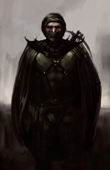 « Le Traître », de Shinux à Mazarus
"Mazarus,
Nos inquiétudes étaient fondées. Jai retrouvé sur le navire de Radjah, encré à Ménéthil, des livres, des recueils, des lettres écrites de la main dune femme. Jai dévoilé un petit médaillon, coincé entre deux poutres de la cabine, un portrait miniature était glissé à lintérieur ainsi quune mèche de cheveux. Vladimir pense que lEcorcheur veut nous doubler, il perd ses moyens. Il a peur. Mishun et Radjah sont étranges en ce moment, moi même je nai plus confiance. Les lettres sont adressées directement à lEcorcheur mais les dates ne correspondent pas ... elles auraient été écrites il y a vingt cinq ans. Il y a également le journal de Maëgwen, elle parle de Radjah. Je crois que nous sommes tombés dans un piège. Une chose est sure ... Radjah est déjà venu en Azeroth il y a vingt cinq ans ..."
Journal de Maëgwen, page 56 intitulé "Avant l'aube"
« Les corbeaux du Darkshire croassaient dans les ruines délabrées de la colline. Le vent lui même soufflait sa crainte au travers des vitres brisées de ma demeure. La vieille femme que je suis est parvenue, seule, à satisfaire bien des désirs. Tous les ingrédients, de ma vengeance ... étaient réunis. Je ne porterais plus ce deuil plus longtemps car mes nouveaux alliés ratisseront à tout jamais les fondations de mon humiliation. Laube réservera à ce monde, un avenir incertain, du sang et des larmes. Je les aiderai à reconstruire ce quils ont perdu, les déchus dOutremonde et leur Prison de sable. Je nai plus peur daffronter leurs regards ardents. Leur colère est si profonde, la mienne est si encrée, que nous nous comprenons. Ils me font confiance, à moi, dont personne na osé adresser un mot depuis trois générations. Suhaymah, avec ses chasseurs de primes, sest mise en tête, de me pourchasser et de méliminer. Mais elle arrivera trop tard. Louverture de mon portail arrive bientôt à terme. Et les Six qui sauront le franchir seront des armes redoutables. Mes ennemis sauront goûter les saveurs de mon savoir, de la douleur, car jouvre la brèche vers les coeurs élémentaires, et leurs souffrances népargnera personne. Là doù vient lexistence, sans une once de vie, un trou dans le néant, un gouffre vers lautre monde. Je prononcerai dans quelques instants, les dernières incantations pour sceller la magie et lénergie de mon portail. Que les puissances me pardonnent ce rituel occulte, mais la colère de Maëgwen ne connait aucune limite. Le portail sera bientôt ouvert ... »
Lune d'Agilité
Décade du Tigre
Décade du Singe
Décade du Faucon
Lune de l'Esprit
Décade de la Chouette
Décade de la Baleine
Décade du Lapin
Quatrième Ère [1]
Lune de la Force
Décade du Panda
Décade du Gorille
Décade de l'Ours
Lune d'Agilité
Décade du Tigre
Décade du Singe
Décade du Faucon
Lune de l'Esprit [1]
Décade de la Chouette [1]
[Radjah/La petite fille et l'Ecorcheur - La corruption]
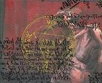Stormwind. Tout est calme. Les éclats de la Lune dominent et éclairent la cathédrale. Gwaen ne dort pas. En réalité, la petite fille ne dort jamais. Elle est posée sur le bord d'un pont et observe l'eau en balançant ses pieds dans le vide. Elle ne semble pas armée du même enthousiasme qu'à l'accoutumée, des voix raisonnent dans sa tête. Des ombres lui rappellent de mauvais souvenirs. Son esprit s'engouffrait dans un trou noir mais tout redevint limpide lorsqu'une main rassurante se posa sur sa petite tête blonde.
"Gwaen ... ,lança l'homme masqué de blanc, d'une voix apaisante
- Rayah ? *toussote légèrement* A wa peur ! A wa seule !"
La petite fille en larmes vint se blottir contre le bras de l'Ecorcheur qui pointait l'horizon d'un regard vide. Il resserra sa main sur le visage de l'enfant, ni tendre, ni distant, juste un peu de calme pour apaiser les pleurs. Elle venait d'apprendre que son père, Argrima, tenterait à nouveau de la récupérer, après l'avoir rejetée à maintes reprises. Elle toussait, de plus en plus. Quelque chose hantait son esprit. Radjah se tenait immobile, toujours impassible, son fidèle macaw posé sur l'épaule.
"Pouquoi les yens que y'aime s'en vont touyours ?" dit-elle d'une voix brisée
L'Ecorcheur fixa la petite fille tout en passant son doigt sur le contour des yeux perlés de larmes. Il ne répondit pas. En réalité, il serrait les dents, l'esprit tourmenté. Il finit par rétorquer d'un ton sec et froid :
"Parce que l'amour tue les gens !"
Cette phrase, scellée dans sa mémoire, semblait déterminer en lui une profonde souffrance. Il s'assit auprès de Gwaen, la nuit peinait à s'achever, les minutes paraissaient des heures. Ils regardaient tout deux l'eau. Elle toussait, encore et toujours. Une maladie inconnue avait commencé à la ronger peu à peu. Gwaen ne dort pas. Elle ne dort jamais. Son pouls s'accélère. Les araignées s'agglutinent sur sa main. Elle sourit mais ne rigole pas. L'Ecorcheur observe, ni tendre, ni distant, juste maintenir un peu de calme. Il pensa en son fort intérieur qu'il allait trouver un remède pour guérir la petite fille, qu'elle vivrait. C'est un secret, une promesse d'antan, faite à lui même, pour se protéger d'un passé qui le perturbe, éviter que l'histoire ne se répète.
La petite fille et l'Ecorcheur ... elle a sa tête posée contre son épaule, l'oeil vibrant, un petit sourire enfin glissé au coin des lèvres. Lui, ni tendre, ni distant, gromèle légèrement puis décroche sa cape et ... hésitant, finit par couvrir la petite avec. Elle ne dort jamais. Mais elle ferait semblant pour profiter de ces petits moments qu'elle n'a jamais eu. Elle rêve d'un père qui fasse attention à elle. Elle trouvait en Radjah une affection sans déceptions. Elle écrasa sa petite frimousse contre le torse de l'Ecorcheur qui, géné, écarta ses mains sans trop savoir où se mettre pour finalement les déposer dans les cheveux de Gwaen. Il plissa les yeux, s'empêchant de s'attendrir. Elle suçait son pouce. Il fixait toujours l'horizon.
A l'aube ...
Endormie, la petite qui ne dort jamais. Elle fut réveillée par le bruit du marché, seule sur le pont. L'Ecorcheur avait disparu, laissant sa cape sur le dos de la petite. Elle a vu les hommes de l'Araignée qui déambulaient non loin de la Prison, de plus en plus nombreux, des adeptes, des acolytes, des gens qui entouraient l'Ecorcheur, de plus en plus puissants. Elle savait que le coeur de Radjah était noir, coincé dans sa douleur, que lui et ses alliés entreprenaient une longue marche vers les Ténèbres ... elle le sait, car cette nuit, elle a rêvé ... elle sait ... qu'il va ... échouer. Et qu'un mal plus grand encore prendra sa place. Mais peu lui importe car ce soir là, elle l'aura aimé ... comme ... un père.
Décade de la Baleine
Décade du Lapin
Cinquième Ère [8]
Lune de la Force [8]
Décade du Panda [1]
[Radjah/Pensées de Manzo XIII Cauchemars]
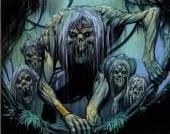 Page 564
Mon corps endolori se réveille... j'ai peur. L'obscurité. J'ai le goût du sang qui reste coincé au fond de ma gorge. Le parfum amer de la mort rôde, putride. Je suis ... enchaîné ?? Mes liens me font mal ! Qui ose s'en prendre à moi, sbire du Roi Liche ? J'ai peur ... j'avais trop oublié ce qu'était la peur. Je suis enragé. Des larmes de colère coulent le long de ma joue ! Non ! Quelle déchéance. Mes pupilles s'habituent à la pénombre. En face de moi demeure une autre silhouette. L'Ecorcheur. Radjah ! C'est lui que j'ai suivi ici, dans les égouts de Stormwind. Ses chaînes ont été brisées ! Il est libre ? Mais ... il n'a plus de jambes. Elles lui ont été sciées ? Non ... dévorées ... arrachées ... broyées ... je me souviens. J'étais semi-conscient quand il poussait des hurlements de douleurs. Sa souffrance paraissait insondable ! Et nous voilà condamnés, tous les deux, dans cette pièce. Aucune issue. J'ai peur. Il y a du sang partout sur les murs, de la chair éclatée, du vomi et bien d'autres crasses qui jonchent le sol. Mon regard se perd.
Radjah a bougé. Il est conscient ! C'est impossible !! Avec tout ce sang perdu, ses membres arrachés ... il bouge. Sa volonté de survie dépasse toute proportion humaine !
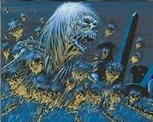
Notre tombeau s'ouvre. "Siiiik, Siiiik" ; une créature écorchée, torturée, hiddeuse rampe dans l'ombre. Même dans les légions du Fléau je n'avais ressenti pareil dégout. Je la sens près de moi. Elle me détache !! J'ai peur. Mon pouls s'accélère ! Elle me réserve le même sort que l'Ecorcheur. Puis plus rien ! Un grand fracas. La chose est tombée ... devant moi. Radjah l'empêche de ramper en s'aggripant à ses quelques lambeaux de chair. Il me regarde : "Dégage ... Manzo ! Casse toi d'ici !" d'une voix brisée, presqu'hurlante. Panique ! Fuir ! J'ai regardé l'Ecorcheur une dizaine de secondes ... pourquoi ?? Pourquoi m'a-t-il aidé ?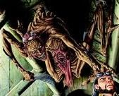 Je lui veux tant de mal et lui réserve peut être bien pire sort que de rester légume ici ! Pourquoi ? J'ai couru comme jamais auparavant ... j'ai entendu les hurlements de Radjah raisonner à travers les longs couloirs des égouts de Stormwind. La sortie ! Une ombre se dresse devant moi ... ami ou ennemi ?? Je souffle ! Elle me fixe. Me parle.
"Ssssssomptueuse ... ssssssoirée ! "
J'ai peur !
Décade du Gorille [3]
[Gwaen/Journal de bord - I - "A wa une chimage"]
[Gwaen/Journal de bord - II - "A wa une exporatice"]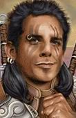Vous retrouvez, dans une vieille machine rouillée au bord du Loch Modan, un journal manuscrit.
Page 1
Mon tendre Ashnzar, ami de toujours et relation de coeur,
Je t'écris pour que tu puisses, à ton retour, trouver en moi quelque fierté d'avoir su réconforter ma tristesse, à la mort de mon cher père, Argrima, qui fut toujours présent à mes cotés. En effet, ce matin même, je fus nommée Archimage par le Conseil de la Magie, nous avons célébré l'événement près de la Tour Blanche au coeur de Stormwind. Les enseignements d'Amélie ont porté leurs fruits et je suis capable aujourd'hui, de porter fièrement la bannière de mon ordre. Ma chouette Mawa a été sacralisée, symbole de mon savoir, et un sceptre runique, selon le modèle de Khadgar lui même, m'a été offert.
J'espère que pour toi tout se passe bien, de l'autre coté de la Porte des Ténèbres. Les faucons du front sont porteurs de bonnes nouvelles, je ne me fais pas de soucis. Tu as toujours été insaisissable des mains ennemies. C'est sans rappeler lorsque l'Araignée à tenté de me dérober à mon père, il y a une dizaine d'années.
J'ai une bonne nouvelle pour toi, je suis parvenue, après une longue étude du mécanisme, à repérer le disfonctionnement de ta nouvelle machine. Le Téléporteur T-738 semble désormais opérationnel, seul un petit détail cloche, mais pas grand chose ... les aiguilles de l'horloge du T-738 tournent, mais pas dans le bon sens.
Ta Gwaen
<Les pages qui suivent sont écrites de la même main, mais d'une encre de couleur différente>
Page 21
Je tiens ce petit journal, mon cher Ashnzar, pour que tes yeux émerveillés puissent garder trace de mon savoir. Ma fierté d'Archimage, je te la dois, toi qui m'a donné amour et bonheur jusqu'à présent, qui a comblé mes défauts et mon sale caractère de ta patience inébranlable. J'ai tenté en vain d'apprendre à deux petits apprentis d'invoquer des moutons en sucre : ils n'y ont pas mis de la bonne volonté et m'ont fait avaler un mouton au piment rouge. C'est Amélie qui a bien ri, moi j'étais en colère.
J'ai également expérimenté en vain le T-738 avec de petits objets mais rien ne se passe comme prévu. Enfin, les objets disparaissent du T-émetteur mais impossible de les retrouver dans le terminal du T-récepteur. Etrange, je ne pense pas qu'ils aient été désintégrés. Aussi curieuse que je suis, je souhaiterai expérimenter moi même la machine. Je sais ce que tu vas penser, tu vas dire que je suis inconsciente, mais j'ai toujours surmonté mes incapacités alors demain, j'entrerai dans le T-738 avec l'intention de comprendre le disfonctionnement de cet engin.
Page 34
Aujourd'hui, je suis inquiète. Un personnage très étrange a frappé à notre porte. Il était bossu, pas très élégant voire peu propre sur lui, j'ai remarqué le tatouage d'un Oeil Blanc sur sa nuque lorsqu'il est reparti. Il m'a donné un parchemin avec quelques calculs qui semblent correspondre à ceux du T-738. Quelqu'un doit surement espionner nos travaux mais il semble que les modifications apportées par le bossu soient judicieuse et ma curiosité m'indique de corriger notre engin. Je vais y réfléchir.
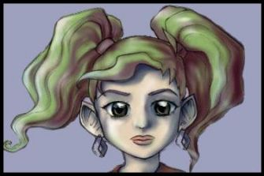
Page 36
Mes deux apprentis ne semblent guère doués pour la magie. Alors que je leur apprenais à maitriser les métamorphoses, je me suis vue coasser comme un crapaud pendant une dizaine de minutes : les deux garnement voulaient cibler un vide-gousset, tenant leurs baguettes par le mauvais bout. Quelle sensation désagréable, je me suis jamais sentie aussi visqueuse, je me suis baignée par trois fois dans le lac avant de rentrer à Stormwind.
J'ai apporté les modifications au T-738 en suivant les indications données par le parchemin du bossu. Je ne sais rien de lui, mais pour une fois ... je me laisse aller à mon jugement personnel. L'horloge tourne toujours dans le mauvais sens mais les objets sont bien téléportés au T-récepteur. J'ai hâte d'essayer la machine par moi même, je vais placer le T-émetteur au Loch Modan, pour calculer la vitesse de phases.
Ceci semble être la dernière page écrite.
[Gwaen/Journal de bord - III - "A wa une puissante moniste"]Vous retrouvez, dans une vieille machine rouillée dans le désert de Tanaris, un journal manuscrit.
Page 1
Cher Ashnzar, mon tendre aimé,
Je t'écris des centaines de lettres mais tu ne les lis jamais. Je t'ai envoyé un millier de roses mais tu ignores leur parfum. De nombreux souvenirs se sont entassés. Je sais que notre amour s'est effondré depuis que j'ai juré de traquer l'assassin de mon père, Argrima. Je n'ai jamais supporté de voir Scheena, celle qui m'a élevé comme sa propre fille, se déconsidérer de la sorte, se dépraver, se détruire par sa soumission devant l'alcool. Je veux lui faire payer ... ainsi qu'à tous ceux de son espèce : Radjah.
Je vais dès aujourd'hui, suivant les conseils avisés de ma marraine Gilda, entreprendre un journal de bord dans lequel figureront mes lettres, mes pensées et mes rapports. J'ose espérer que cela t'intéressera car malgré la distance, mon coeur te sera toujours fidèle, et je fais cela pour nous rapprocher.
<Les pages qui suivent sont écrites de la même main, mais d'une encre de couleur différente>
Page 21
J'ai reçu une lettre d'Amélie. Elle est sur un grand projet : une machine à remonter le temps. C'est farfelu mais ma tutrice n'a jamais manqué de fantaisie. Seulement j'ai foi en son travail surtout depuis la découverte de failles temporelles à Andorhal et de Caer Darrow. Elle a déjà mis au point son quarantième prototype : le T-40. Il fonctionne très mal mais on peut réchauffer des aliments avec.
En attendant, je poursuis mes recherches. Mes pas me guident vers Ménéthil, le petit port situé en Khaz Modan.
Page 34
L'aubergiste de Ménéthil a refusé de me porter quelqu'indice sur la présence des témoins d'Outremonde dans la région. Un vieux marin nommé Souhad a interrompu notre conversation. Il m'a prétendu en savoir un peu plus sur celui que je cherche. Il a d'abord essayé de me dissuader de poursuivre mon enquête puis finalement m'a invité à bord de son navire, encré à Ménéthil. Je fus surprise du comité d'accueil. Ils étaient tous là, les sept témoins d'Outremonde. Le marin n'était autre que le frère de Radjah, celui que je hais et pourchasse depuis des semaines. Ashnzar, ton pouvoir m'aurait été utile car il m'était difficile de contenir ma colère. J'ai sauté à la gorge de l'assassin, celui ci n'a pas bougé d'un cil. Il me regardait, souriant et provocant. Je le DETESTE !! Une femme, ressemblant trait pour trait à tante Cheena fut la seule à savoir m'apaiser. Ils m'ont amené à l'arrière du navire. Je suis toujours dans la chambre, ils m'ont dit qu'ils m'expliqueraient seulement lorsque je serais calme et reposée. La porte n'est même pas fermée à clef, ils savent que je ne partirai pas !
Page 36
Le lendemain, après avoir retenu le nom de chacun de mes ennemis, je vis Mazarus, le doyen des sept, m'apporter un petit déjeuner nain. Saucisses fumées, sanglier rôti et autres denrées carnassière. Je n'avais pas faim alors je leur ai renvoyé le plateau à la figure en hurlant "Pas faim !". Merenptah s'est énervée mais Radjah a arrêté son bras avant qu'elle ne me lance un sort cruel. Il est venu s'asseoir à mes cotés. Calme. L'air d'être jamais coupable parce qu'il assume ! Parce qu'il assume alors il n'a aucune culpabilité ! Je le hais !! Ashnzar, tu me manques. Mes perles de larmes n'ont pas suffi à lui tirer les remords que j'aurais voulu entendre. Il a demandé à Vladimir et Shinux d'apporter cinq artefacts. C'était il y a dix ans.Il me montra cinq pierres scellées d'un symbole étrange, cinq sceaux. J'en avais entendu parler mais je croyais qu'ils étaient Légende. Toutes les histoires qu'Almalia me racontait en me berçant, étaient réelles. Toutes les craintes que Cheena extériorisaient ... étaient réelles. Les cinq pierres se sont mises à briller quand je les ai touchées. Puis je me suis évanouie. Je me suis retrouvée, seule, sur la plage de Ménéthil dont les vagues venaient me lécher les pieds.
Page 42
Amélie semble avoir enfin réussi à mettre en place sa machine, enfin elle n'a essayé que sur des objets qu'elle fait apparaitre dans le futur. Elle a remarqué que l'objet restait dans le présent et apparaissait également cinq minutes après. Elle a cloné de la sorte des centaines de sucreries et de gateaux. Elle aimerait essayer sa machine dans des conditions plus dures, à Tanaris. Je pense l'y accompagner.
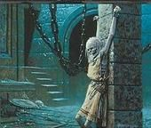
Quant à moi, je me retrouve au point de départ. Je porte un collier, avec cinq pierres, une rouge, une bleue, une noire, une blanche et une transparente. Ce n'est pas sans rappeler les artefacts que Radjah m'a montré sur son navire. Pourtant, seul mon père a été assassiné, parmi les cinq porteurs.Je fais souvent des cauchemars depuis, je rêve d'un Oeil Blanc et de créatures rampantes. D'objets de tortures. J'ai l'impression que tout est lié mais c''est un mystère que je résolverai après mon expédition à Tanaris avec Amélie.
Ceci semble être la dernière page écrite.
Vous retrouvez, dans une vieille tour en ruines, aux alentours d'Hillsbrad, un journal manuscrit.
Page 1 à 13
Ashnzar, pourquoi ? Pourquoi m'as tu laissée dans l'ignorance toutes ces années ? Quelles étaient tes intentions ? Je souffre aujourd'hui d'avoir à répondre aux mystères qui auraient pu être résolus il y a si longtemps. Toi, Prince des tourments, Ashnzar, l'ami imaginaire. Je pensais avoir le contrôle de toute chose en ce Monde. L'Histoire se répète... je le sais. La Légion Ardente a consumé l'entièreté de notre Monde : Est-ce ma faute ? Ce serait presque présomptueux de me vouer responsable d'un tel cataclysme. Combien ont survécu ? Tante Amélie est la seule qui me reste aujourd'hui dans l'humidité des provinces d'Hillsbrad. Et toi ? M'es-tu encore fidèle, Ashnzar ? Je veux comprend quelles sont tes motivations, et les miennes. Alors j'ai consacré ce journal à mes enquêtes, mes origines ... pourquoi ma seule vie suffit à dérober celles de bien d'autres innocents ? Je pensais tout contrôler. Je souffre.
A l'origine étaient cinq sceaux ... tenus par cinq porteurs.
A l'origine étaient cinq porteurs ... protecteurs de cinq femmes.
A l'origine étaient cinq femmes ... qui offrirent leurs larmes à une enfant.
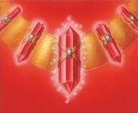La rose Rouge : Suhaymah. Porteur : Argrima
Mes vrais parents se nomment Suhaymah et Argrima. Ma mère était la fondatrice d'une équipe de mercenaires, des marginaux et des solitaires qui disputaient les intérêts d'une société qu'avec une bourse remplie de pièces d'or. Je ne l'ai jamais connue : elle est morte en me mettant au monde. Mon père lui, plus noble, et plus sage, était un grand adepte de la morale et un prêtre aux pouvoirs impressionants. Ce fut dur pour lui de m'élever, j'étais déjà très caractérielle. Il a souffert tellement que ses décisions perdaient du sens et il renonça à mon éducation qu'il avait commencé à parfaire avec Scheena, que je considérais comme ma vraie mère.
Ainsi Suhaymah, ma mère, fut la première à m'offrir une larme, avant de mourrir. Car cinq larmes de cinq femmes étaient nécessaires pour accomplir le rituel : empêcher une enfant d'atteindre sa sixième année où elle tirerait de ses pouvoirs une force incroyable qui attireraient à nouveau les démons. L'énergie de cette enfant fut concentrée dans cinq pierres, cinq sceaux, portés par cinq personnes qui devront à tout jamais les protéger. Mon père, premier porteur, du sceau "rouge", fut le premier a échouer lorsqu'un homme aux desseins maléfiques le lui a dérobé : Radjah, l'Ecorcheur.
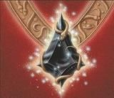La rose Noire : Ayany. Porteur : Cheena
Ayany est une femme que ma mère a tenté d'assassiner pour un contrat. Le commanditaire de cet acte n'est autre que Cymbelîne, qui apparaîtra bien plus tard comme étant la fille de l'Ecorcheur. Hasard ? Radjah est un homme que je respecte parce qu'il a tenu tête à bien des choses et si ses intentions étaient viles à mon égard, il en fut autrement par la suite. Je pense devoir ce revirement à Cheena, femme qui fut la plus présente à mes cotés et porteuse du Sceau Noir qui lui a été confié. Ayany était une jeune femme tremblante mais pas moins puissante pour autant, sa peau était pâle. C'est tout ce qui me reste d'elle dans mes souvenirs. J'ignore si elle vit encore.
En revanche, je sais que le sceau de Cheena a lui aussi été brisé, libérant en moi des pouvoirs impressionnants pour une petite fille : j'étais alors capable de faire de petits portails d'invocations d'où émanaient parfois des démons mineurs ou ... des elfes égarées telles que Miyawna. Cheena me manque énormément ... et Radjah aussi.
La rose Bleue : Callirhoé. Porteur : Vélassia
Voilà une femme trop souvent traquée par des assassins de l'ombre. J'ai toujours ignoré la véritable raison de sa mort. Je sais qu'elle a été poignardée par un certain F.... mais le mobile m'est toujours demeuré inconnu. Une femme si belle, et si convoitée, que les hommes les plus fourbes n'hésitaient pas à payer des mercenaires pour éloigner leurs adversaires dans leur course au désir. Sa couleur était le bleu et sa porteuse était une elfe nommée Velassia. Elles étaient amies si mes souvenirs sont bons. Je croisais si peu ces deux femmes en réalité mais j'ai un souvenir très sucré et très agréable de leur présence à mes cotés. Le Sceau a dû être brisé à la mort de Callirhoé.
La rose Blanche : Elhoïnah. Porteur : Lianrhyn
La seule des cinq femmes à m'être parue sans cesse hostile, méfiante et froide : Elhoïnah. Une fanatique comme il était fréquent d'en croiser après la dissolution de la Sainte Inquisition. Blanche, parce qu'elle représentant probablement la pureté, ou la Lumière. Lorsque la Guerre d'Ahn Qiraj a débuté, elle est partie sur le front ... je crois qu'elle n'en est jamais revenue. Le sceau a dû s'être brisé à ce moment là. Son porteur était un elfe assez sauvage, ami de Cheena, qui a manqué par deux fois de me dévorer quand j'étais petite.
La rose verte : Télima. Porteur : Almalia
Et là ... grand mystère. Je sais que Télima était une femme à la grâce féline et aux accents instinctifs et Almalia, une de mes favorite, m'avait offerte une chouette que j'avais baptisé "Mawa" pour lui rendre hommage. Le jour où mes pouvoirs se sont réveillés ... je n'ai plus jamais entendu parler ni de l'une, ni de l'autre...
Ashnzar ... je pense que ton pouvoir saura m'être utile. J'ai besoin de remonter le temps et de découvrir ... ce qui est arrivé à toutes ces femmes et si j'ose ... peut être changer certaines choses..
Ceci semble être la dernière page écrite.
Décade de l'Ours [4]
[Gwaen/Le Trombigwaenoscope - 1]
[Gwaen/Le Trombigwaenoscope - 2]Bonyour. A m'appelle Gwaen !
A wa la fille doptive de Cheena et a habite avec Rayah.
A aime beaucoup le yus de goyave, les araignées et dessiner.
A fait aussi la collection des pumes d'oiseaux et de pogryphes !
A wa vous montrer mes equisses a wa baptisé "Trombigwaenoscope"
Oeuvre 1 : "Amelie et le moutonnage intensif"
Tout d'abord, wassi ma Tata Melie ! A habite touprès de la grosse église à Stomwind. Sa porte nous toque dessus quand on toque dessus. A wa rigolo la pemière fois mais apès ça fait mal. Souvent ya pein de monde, Nounie y va souvent aussi. Pafois elle fait des tas de moutons, des gros moutons, des pitis moutons, des moutons en sucre aussi : a sait les faire ceux là. Melie dit que a suis une fripie ! C'est pire qu'une sipie.
Oeuvre 2 : "La petite fille et l'Ecorcheur"
Toumonde dit que Rayah wa messant ! Qu'il naime personne. Ma avec moi, il est ... pas touyours yentil c'est vrai. A dit que ye suis une tipeste. A sais pas trop ce que c'est mais ça a l'air messant. Il a une grosse épée n'orange et une araignée dessinée sur son ventre. Ma aussi en a une, ma maman doptive Cheena m'a offert une Araignée. A la porte pour "Lonneur". A ma espiqué que lonneur c'est ... a wa oublié !
Oeuvre 3 : "Une vraie maman !"
A wa compliqué. Ma pemière maman wa morte à ma naissance. Ma seconde pemière maman ma bandonnée comme l'a fait mon pemier papa : Argrima. Du coup a wa souvent touseule. Mais Rayah et Cheena a wa là pour moi minant et du coup a m'ennuie pu yamais. A leur fait souvent des farces hihi ! Mais bon, a leur offre souvent des moutons en sucre. A wa pas trop l'air d'aimer ça mais a se forcent quand même à manyer pour me faire plaisir !
Oeuvre 4 : "Les copains de tonton Ghinoth"
Tonton Woth wa un nain très rigolo. Une fois a wa tansformé lui en mouton pour rigoler mais a m'a fait disputer ! Souvent tonton Woth invite ses copains pour boire de la bière et youer au pokair ! Le pokair est un yeu de carte pas pour les n'enfants. Et pis y se moquent de moi quand a leur dit que pafois a vois des fantomes dans ma chambre. Tonton Woth dit que faut que y'arrête les moutons en poivre, ça me réussit pas ! D'abord y sont en sucre. Y comprend rien. Pour me venyer, a wa enfermé les copains de tonton Woth dans la chambre toute une nuit avec les fantomes. Depuis a m'embetent plus ! Et les fantomes non pu d'ailleurs hihi.
Oeuvre 5 : "Le cycle de l'amitié"
A wa déya dit mais y'adore le yus de goyave. Ma, plus on m'offre de yus de goyave plus a aime la pessonne. C'est inespicable. Un your a wa rencontré "Madame Goyave" en pessonne : c'était au niversaire de Nounie, dans la ruelle Couporge ! "Madame Goyave" wa très yolie, a s'appelle "Jélini" en vrai ! Elle m'a donné un verre yigantesque de goyave alors du coup à l'aime yigantesquement.
Oeuvre 6 : "Cauchemars"
Pafois la nuit a fait des cauchemars. A rêve souvent des n'égouts depuis qu'on a été récupéré Rayah là bas. Les monstres sont horribes et y a du sang et des morts patout. A wa peur que Rayah retourne là bas, a wa comme un papa pour moi même s'il sourit pas souvent. Quand il est reviendu de là bas, il n'avait pu de bras, pu de yambes et pu de n'oeils. Ma maman Cheena a wa donné à lui son oeil pour qu'il voie un peu quand même. Puis grâce à Gwolline et d'autre yens, il a tout récupéré : mayie noire il parait ! Du coup il est en colère contre les messants des n'égouts.
Oeuvre 7 : "Le Tempogwaenisateur"
Ma tata Mélie va m'aider à constuire une massine à remonter le temps. Comme ça a wa pouvoir réparer pein de chose et Rayah pourra revoir sa maman et il deviendra yentil. A wa compiqué à construire, a wa déjà dessiné des plans et fait des maquettes. Mais tata Melie compend pas pouquoi y a une hélice !? Bah ... a sais pas non pu mais a pense que c'est super important. A commence déya à récolter pein de boulons...
(à suivre...)


Oeuvre 8 : "Gwendolline l'autoritaire !"[Gwaen/Le Trombigwaenoscope - 3]
A wa été invitée au restorant avec Gwolline, pis Vaya pis trois copains à eux. Gwolline a été très toritaire avec ma. Poutant a wa restée sage... a pa ma faute si a fait des betises pafois :'( ... a failli m'être punie de dessert pusieurs fois. Pis apès y a un monsieur messant qui a été puni lui aussi, il est obigé de tavailler pour le pital. Ma a aimerait pas être à sa place, paqueu Gwolline est trop toritaire !
Oeuvre 9 : "Une famille parfaite ?"
Souvent a pense à mon vrai papa. Mais a pense que minant a wa une vraie famille malgré que a wa de drôles de parents. Pafois a aimerait bien que Rayah et Cheena me fabiquent des petits fères et petites soeurs. A wa yuste Cymbine comme demi-gande-soeur et elle fait rien que dire des choses messantes sur mwa ! "A te yeterait dans la lave si a pouvais". Horribe Cymbine. Ma quand a demande d'avoir un tit frère, Rayah et Cheena ma disputent et apès y se diputent entre eux : "Berk, Yamais de la vie" dit CHeena. "Même pas en rêve" dit Rayah.
Oeuvre 10: "Un étrange visiteur - 1"
Hier, a wa été réveillée par un massieur bizarre. A wa une capusse avec un oeil dessus et un habit avec deux gros serpent ! A pouvais pas voir sa tête mais il avait l'air messant ! A m'a dit : "C'est toi Gwaen ?". A wa répondu "Na ! Gwaen a wa patie chez les n'elfes". Le massieur a rigolé, a se moquait de moi et tout. Il a seyé de me knappé alors a wa crié, m'a débattu. Messant !
Oeuvre 11: "Un étrange visiteur - 2"
Comme a wa crié très fort, Rayah wa venu m'aider. A se sont diputé longtemps. Pis à se sont bagarré chez tonton Woth. Le massieur wa très fort ... ou bien Rayah wa très nul mais impossibe de savoir qui allait gagner. Finament tonton Woth est rentré avec un autre sasseur de primes et le messant massieu a dû s'en aller. A m'a dit "A reviendrai !". Alors du coup Rayah a demandé à Mishun de me suveiller :((( Pouquoi toumonde veut m'embeter ?
Oeuvre 12 : "Ma journée à Sombrelune"
Un your, Tistana m'a emmené à Sombelune comme pomis ! Là bas a wa beaucoup m'amusé. Filk est ma nouveau copain. A court tou le temps apès des guenouilles alors moi aussi. On rigole bien. Des fois on se bagarre comme les adultes y font. Lui il est tout vert et a compend pas touyours ce qu'il dit alors des fois on se dispute ! Pis des fois on embête les yens. Le soir, a wa l'heure de rentrer, dit Tistana. Alors on s'a dit awar avec Filk. Il m'a donné un guenouille, a s'appelle Kimmy. Vivement qu'on se revoie pour rigoler encore.
Oeuvre 13: "Une copine louche !"
A sais pas trop comment elle s'appelle ... a wa très yolie. M'a souviens que y'ai dû l'invoquer pour youer un jeu rigolo avec Rayah. Mais l'autre your ben elle m'a dit qu'elle avait un rendévou avec un messant ! Moi aveu voir le messant mais elle a dit "Non !!! A WA DANYEREUX !". Bon d'accord. En cassette ma wa suivi elle... en youant avec ma nouvelle guenouille. Mais comme ye maitrise pas encore bien le futif comme ma maman Cheena, a m'a suis fait surpendre par un gros chat ! Qui après s'est tansformé ! A wa pas vu le messant du coup, a wa obliyée de partir.
(à suivre...)


Oeuvre 14 : "Tyranael, un radar efficace "[Radjah/Cynthea - Saveurs sanglantes]
L'autre your, y se passait pein de tuc à la baye de norchire. Mais comme dabitude, pessonne ne m'invite (sauf Nounie pour son niversaire). Alors a wa tenté d'y aller tousseule. Gwolline m'a grondé : "rentre à la ville tisuite !". Du coup a wa obliyée (encore une fois) de me cacher dans le décor : on appelle ça le futif ! Et là une grande madame n'elfe avec un chapeau sur les yeux m'a attapée et m'a fissue dehors, et pis m'a grondé comme Gwolline. Messante ! A me souviendrai touyours d'elle et un your a lui donnerai une mégafessée !
Oeuvre 15 : "La petite fille de l'orphelinat"
Ma pafois, a aime bien aller au pital. A souffre de carences en scucreries et là bas on me soigne bien avec des mécaments en bonbons. La firmière Vaya est très yentille, et elle gronde yamais ! Pas comme Gwolline. A wa été toutes les deux distribuer des mécaments bonbons à l'orphelinat piqueu là bas tous les enfants ont des carences en scucreries. Mais là bas, y a une petite fille étranye. Elle se cache sous l'armoire souvent et elle me dit "Chut ! Chut !". Son nounours est tout cassé, a wa pomis à elle que a lui ramènerait un tout neuf !
Oeuvre 16 : "Le cirque à l'hopital"
Apès l'orphelinat, a wa revenue au pital avec Vaya. Et tata Mélie wa là aussi. Comme d'habitude elle nous fait tous grandir pour que a sois la même taille elle et moi. Melie et mwa a wa jetée sur Vaya pour la chatouiller très fort, elle rigolait beaucoup. Pis elle a renversé tous les bonbons par terre. A wa mal au ventre à la fin mais pu de carences en scucrerie pour la semaine au moins. Pis aussi on a déguisé Vaya en cloune. A lui a fait un nez rouye et des lèvres vertes (a ma suis trompée de couleur hihi). Pis Melie lui a fait des bords des yeux tout bleu !
Oeuvre 17 : "Dialogue avec un aliobi ?"
Pafois a vois des trucs bizarres. Y a des yens avec leur nom marqué au dessus de leur tête qui me parlent et a compend rien du tout. A sont habillés souvent avec des vetements très grands. Mais a suis la seule à les voir, pessonne me croit ! A pense que c'est ça les aliobis que parle tata Mélie ! Souvent a disent "stp" ou "svp"... Rayah dit que a devrait recycler mon imayination à force de boire trop de goyave. Ca embête les cellules du cerveau et a me donnent des illusions.
Oeuvre 18 : "Un entrainement féroce"
Cheena et moi wa partis très tôt ce matin pour faire le tour du monde. Pour m'entainer à me défendre et aussi pour que a vois autre chose que Stomwind. A wa été yusque chez les n'elfes et là bas a wa combattu peins de monstres, des dragons yéants et aussi des gobelins, et aussi des abres messants et des n'ours. A suis plus forte qu'avant ! Minant a me laisserai pu embeter par Missoune et la madame au chapeau.
Oeuvre 19 : "Le bébé Kodo"
Avec Cheena, a wa visité Tanaris dans le désert loin de Stomwind. Là bas, ma a monté sur un bébé kodo, wa yigantesque, comme mille fois ma taille ou pesque. Ma a déya plein de nimaux mais a aimerait bien adopter un bébé kodo pour youer avec Kimmy. Mais Cheena elle dit que wa trop gros pour rentrer dans la maison de tonton Ghinoth... A commence à dessiner les schéma d'un pareil pour rapetisser les yens. Ou alors a demanderai à tata Melie de tout grandir sauf le bébé kodo !
Oeuvre 20 : "Berceau de l'Hiver, début printemps"
A wa été loin là où il fait très froid. Mais y a de la neige, et ma aime bien me rouler dedans. A ma amusé a faire pein de bonhommes de neige. Même qu' un gros nours qui parle nous a poursuivi. Cheena dit que wa un Fulbog pa content pasqueu a wa jeté une boule sur lui. Ma a voulai yuste rigoler.
Oeuvre 21 : "Souvenirs - L'anniversaire d'Enna"
Le 4 septembre wa mon niversaire ! Mais c'est dans longtemps. A wa hâte d'y être pasque au niversaire de Nounie, a wa pas eu le droit de boire comme elle. Heureusement y'avait du yus de goyave. Mais bon, a aimerait bien gouter aussi comme les grands. Nounie m'a dit : "Quand wa ton niversaire, t'auras n'droit"... a doit attendre longtemps encore. Pff.
Oeuvre 22: "Awar !"
A l'heure qu'il est, a wa surement en train de faire un gros dodo paqueu a wa manyé pein d'énergie pour combattre un grand messant. A sais pas si a me réveillerai un your. A espère que Cheena et Cymbine wa prendre bien soin de moi. A aimerai bien que le your de mon niversaire, wa tous mes amis présents pour faire la fête comme avec Nounie et pis même si a suis pas réveillée, a tiens à leur dire que a les aime tous !! Même Gwolline ! Awar toumonde !


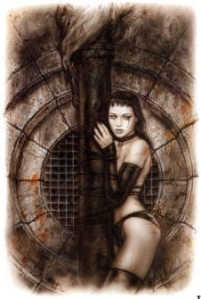"Nous avons partagé nos chairs dans un combat précieux. Elle se mordait ses lèvres tandis que ma lame déchirait son visage comme une profonde caresse. Son regard était brûlant, ses lèvres blanches. Elle tremblait. La fatigue lui avait brisé les jambes. Elle était l'objet de mon désir, trempée dans une solitude qui la dressait contre moi. Du sang coulait le long de ses cuisses, allongée sur un tapis d'herbes : les yeux fermés, la bouche semi-béante, esquissant avec légereté le portrait d'une douleur contenue, comme figée dans le temps. Ses cheveux ondulés, noirs ébène, cachaient les plaies qui marquaient sa peau mate, ne dévoilant qu'une petite perle de larme. Celle-ci glissait le long de sa joue, caressant le bord de ses lèvres avant de retomber sur le menton telle une âme en peine arpentant les sentiers d'une falaise. J'avais le souffle coupé. J'embrassai son corps d'un regard enflammé, de braise, attisé par sa souffrance. Elle ne m'avait guère épargné : d'un coup de poignard dans l'épaule, ma main droite flottait dans le vide. Elle avait appris à paralyser l'adversaire. Ma main gauche devînt plus sure et mon regard plus méfiant. Je me délectai de sa beauté, si pâle et si froide, comme une fleur malade soufflant son mal à quiconque tenterait de la cueillir. Elle se releva difficilement, toujours en mordillant ses lèvres pour étouffer le moindre cri qui trahirait sa douleur. Une telle fierté ! Une telle détermination ! Elle se précipita vers moi et d'un geste mutuel nous nous pénétrâmes de nos lames respectives. Elle poussa un gémissement. Je contenais ma fureur. Je lui murmurait "Plus profond", délicatement dans le lobe de son oreille. Elle fut parcourue d'un long frisson causé par mon souffle. Elle m'avait éventré. Je sentais son coeur battre à travers le rythme de mon glaive. Une mélodie qui suivait son regard, paniqué. Son corps m'appartenait. Mon corps lui appartenait. Elle retira sa dague et mon sang jaillit. Je m'effondrai le premier. J'avais perdu. Elle succomba ensuite, agonisante, poussant quelques gémissements entre douleur et soulagement. J'aurais dévoré sa tendre chair et bu à pleine gorgée la coupe écumante de ses désirs. Que la passion qui nous anime ne soit arbitrée que par la haine ; Ou pire, que nous espérions croquer le fruit d'un arbre déjà mort."
Lune d'Agilité
Décade du Tigre
Décade du Singe
Décade du Faucon
Lune de l'Esprit
Décade de la Chouette
Décade de la Baleine
Décade du Lapin
Sixième Ère [3]
Lune de la Force [3]
Décade du Panda
Décade du Gorille
Décade de l'Ours [3]
[Radjah/La fin de lEcorcheur Epilogue (1/3)]
[Radjah/La fin de lEcorcheur Epilogue (2/3)]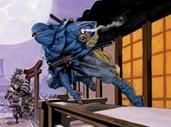Au bord du canal, les réflexions de Radjah furent interrompues par les cris stridents dune jeune fille non méconnue de lEcorcheur :
« Jai dix-huit ans ! Jai dix-huit ans ! hurlait Amaëljiza. Depuis deux minutes et quarante-huit seconde.... quarante-neuf ...
- On dirait pas. Enfin ... tant mieux pour toi, répondit Radjah, agacé, sans se retourner vers la jeune fille ni même lui adresser un regard.
- Oui mais je nai personne à qui lannoncer ! Jai dix-huit ans !
- Vraiment ? Je te croyais pourtant bien entourée...
- Faut croire que les tendances changent !
- Hm... probablement. Tiens finalement jai peut être un truc pour toi »
LEcorcheur sortit de son sac quatre pierres dElune. Pour lui ces objets de « foi » navaient pas grande valeur. Amaëljiza sen saisit avec curiosité, ne comprenant ni le geste, ni lobjet, mais ne cachant pas un certain enthousiasme de recevoir quelque offrande en ce jour qui lui était précieux :
- Merci, cest gentil, reprit-elle.
- Pas-de-quoi, grommela-t-il
- Puisque je nai personne à qui lannoncer, je vais lannoncer à tout le monde, certains se montreront sûrement aussi généreux que vous ! »
Elle repartit, comme elle était venue, en sautillant le long de leau, laissant place à une présence bien plus ténébreuse auprès de lEcorcheur.
« Cest écurant de voir à quel point tu es devenu minable, Radjah. lança Nashu, en faisant voler au dessus de sa main une petite mèche de cheveux roux appartenant à Amaëljiza. Radjah restait calme, impassible, le regard flambant.
- Nashu. Cynthea était comme une sur pour toi ... nest-ce pas ?
- ...
- Je ne te pardonnerai jamais, de lavoir laissé mourir devant mes yeux.
- Ni faibles, ni traîtres... cest toi qui le disait fièrement, la doctrine de ton peuple fier.
- Quand je taurais éliminé, jéliminerai Ashnzar puis enfin ... Correlli.
- Jen doute fort. Tu veux brûler les saisons, tu oublies quelques détails :
A lheure quil est ta tendre Cymbeline est entre nos griffes. Le Seigneur Correlli est bien décidé à venger la perte de son protégé. Il na pas vraiment apprécié que tu mettes un terme à lhorreur des égouts, un projet que nous avons bâti ensemble pour raser cette ville de sa vermine. Souviens toi...
- Je me fiche de nos anciens projets, Correlli na pas tenu ses promesses...
- Libérer ton peuple de sa prison de sable ? Haha. Laisse moi rire, pantin.
- Nashu. Jai une arme vengeresse que tu ne pourras jamais tapproprier, elle est entière et sa notion de morale a déjà été souillée par des ennemis plus forts que toi. Tu as toujours été plus malin que moi, plus rapide, plus efficace mais le vent a tourné. Je me suis entraîné sans relâche pendant vingt ans, jai ouvert les pouvoirs de mon héritage et jai appelé des renforts ... »
Nashu, dans un élan de fierté, aussi téméraire que véloce, transperça le corps de Radjah en douze endroits précis de son buste. >>Les 12 morsures du Serpent<<. Content de sa technique, Nashu lâcha un sourire carnassier, son regard noir fixait Radjah qui restait dun calme troublant.
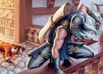
---- Impossible !! sétonnait Nashu. Les plaies de Radjah se refermaient à une vitesse incroyable. Une main, jeune et douce, appuyant la nuque de lEcorcheur, se révéla être la cause de ces soins prodiges.
« Je te présente Mishun, experte en soins de la Main de Sarmate. Et derrière toi, voici Merenptah, experte en souffrance de la Main de Sarmate. »
---- Comment ai-je pu ne pas les voir, paniquait le tueur. Qui sont ces deux femmes ?
Limpasse sassombrit soudainement. Aux incantations démoniaques de Merenptah, Nashu vola brusquement de quelques mètres avant dexploser en une pluie de boyaux et de viscères.
« Je brûlerai les saisons, je brûlerai ceux qui se sont mis au travers de mes sentiments. Je vengerai Cynthea, je libérerai mon peuple et jimposerai une terre qui sera nôtre. Nous attendrons patiemment KilJaeden pour lui faire entendre qui sont les témoins dOutremonde... »
Les trois sen allèrent, embrasant limpasse avant de prendre la route vers les terres foudroyées, non loin du Grand Portail, où se terrait limmonde tour du sorcier Nephicius Correlli.
Mais non loin de limpasse, au cur de Stormwind, de grands yeux, ronds comme des billes, avaient été témoin de la scène. Désireuse dapaiser sa curiosité, la petite chose se mit en tête de suivre lEcorcheur et ses deux compagnes ...
[Radjah/La fin de lEcorcheur Epilogue (3/3)]--- Le Clan Bleeding Hollow marche en Azeroth, les premiers éclaireurs orcs rapportent à Draenor les fruits de leur expédition. ---
"La sphère est en train de se déchirer, Seigneur Correlli, annonça Nashu à son Maître.
- Fais venir mon fils, Darius. Sur le champ ! Je veux qu'il savoure cet instant autant que moi."
Darius Correlli, de ses seize ans, était le portrait craché de son père, le terrifiant Nephicius Correlli, duc de Grand Hamlet : ils étaient propriétaires des terres les plus fertiles de la région avant qu'elles ne soient souillées par la Horde, transformant ce havre de paix en un immonde marécage. Le jeune Darius s'était épris de la piquante Cynthea, une jeune rôdeuse farouche, qui n'avait nulle famille et dont le caractère défaisait rapidement les séducteurs naïfs. Elle accepta de servir le Duc Correlli, bien payée pour quelques larcins. Elle lia une grande amitié avec le ténébreux Nashu, un enfant qui avait massacré sa propre famille, que Nephicius avait recueilli pour en faire un tueur efficace.
Darius, Nashu et Cynthea s'assirent auprès du Duc pour admirer un spectacle grandiose, quatre années de recherche et de renforcement intensif de runes et de magie : la Sphère d'Invocation allait bientôt se briser, dévoilant le visage d'un émissaire venu d'un autre monde, porteur de destruction. D'explosions d'arcanes à d'immenses salves de feu, la brume épaisse s'échappa peu à peu ...
"L'Héritier du Trône de Zahâm est enfin parmi nous ... mes enfants" acclama fièrement le Duc.
Un jeune homme à la peau mate et au regard enflammé, ne portant aucun vêtement, dont la musculature était bien dévelopée pour son "âge" apparant, demeurait immobile devant l'assemblée émerveillée par son arrivée.
"Bienvenue ... sur Azeroth, fils de Sarmate
- Ak'amna labàs yassin ? répondit sèchement le nouvel arrivant.
- Tu ne comprends pas notre langue ? Ak'samma ne lan'du khaïm
Comment t'appelles-tu ? Deb ak'nemmet ?
- Radjah, ibn Sarmate ek lan'de akhîn'Ellah
- Radjah, fils de Sarmate, qui signifie "Craint par Dieu"
<...>"
Les mois qui suivirent, Radjah apprit le commun et servit Correlli dans l'unique but de détruire tout ce qui lui était désigné. Il n'était fait que de haine et de rancoeur. Il avait grandi dans un esprit de compétition tel que seule la mort pouvait venir à bout de sa fierté. Pourtant, quelque chose allait changer en lui : la proximité de Cynthea. La jeune femme déclencha chez Radjah des envies de meurtres mêlées à un désir profond. Alors qu'il tenta de la tuer, qu'elle se défendit mieux qu'il ne l'aurait cru, il finit par renoncer et s'avouer vaincu par ses sentiments, créant chez Darius Correlli, un sentiment très violent de jalousie. Si bien qu'un jours Darius fut retrouvé écorché et empalé devant la demeure de Nephicus Correlli, Radjah et Cynthea avaient disparu. Le Duc lança une malédiction sur la jeune femme tandis que Nashu, le plus fort de tous, les pourchassa durant trois ans, sans jamais parvenir à ses fins. Cynthea mourrut en mettant son enfant, Cymbeline, au monde. Radjah se résolut à abandonner sa fille et à retourner en Outremonde jusqu'à ce que Maëgwen permette l'ouverture d'un Portail plus grand que celui de Nephicius, afin que l'Ecorcheur puisse revenir avec d'autres de sa race ...
L'Invocation de Radjah
--- Dans les Terres foudroyées, de nos jours ---
Trois silhouettes sombres et menaçantes gravissaient les marches de l'inquiétante Tour du Grand Sorcier. Le sommet menait dans les ténèbres, le ciel couvert d'un épais nuage de corbeaux, le sol tapissé de cadavres frais de gobelins, d'orcs et d'humains.
"Tu en as mis du temps, Radjah ! Je suis impatient de me battre car je sens une grande force parmi vous..." annonça une voix grave :
Devant les trois Zahâmets se dressait la figure pâle et obscure du Seigneur Serpent : Nephicius Correlli. Le sol se fissurait autour du Sorcier tant ses pouvoirs étaient grands. Merenptah se tenait dans sa plus belle parure, ses ongles devinrent foudre et son regard devint tempête, déchainant les éléments autour d'elle puis une pluie infernale venue du ciel. Mishun, en retrait, entourait ses bras de son aura regénératrice, un pouvoir que seul les plus puissants de la Main d'Argent sauraient reproduire. Radjah cogna le sol de son épée, fissurant la bâtisse jusqu'aux fondations. Il s'était spécialisé dans la chasse à l'homme et particulièrement dans celle des sorciers, sa force avait décuplé depuis sa dernière défaite face au Rampant. Son regard emprunt de fierté prouvait sa détermination, le miroir en lui reflétait le portrait déchu de la douce Cynthea et celle de sa non moins jolie fille, Cymbelîne, qui se tenait dans une prison faite d'os et de cadavres, derrière Correlli.
Merenptah lança les hostilités en déployant son armée démoniaque que le Seigneur Serpent para de sa magie obscure en relevant les cadavres qui jonchaient la pièce. Démons et mort-vivants s'affrontèrent, comme les pions d'un échiquier géant dont les Rois ivres ne cessent d'abuser du jeu, se délectant de leurs forces et faiblesses mutuelles. Ce fut la mort qui prit le pas sur les infernaux et Merenptah fut rouée de coups par une demi-centaines de cadavres décomposés. Aussitôt que sa chair fut fendue, les blessures de la démoniste guérissait à une vitesse incroyable. Il fallut peu de temps à Correlli pour comprendre que Mishun devait être neutralisée la première. Tout en repoussant les assauts violents de Radjah, le Sorcier parvint à incanter une sphère de silence qui se resserait de plus en plus autour de Mishun. Privée de mana, l'experte en soins fut mise à l'écart.
Merenptah qui s'était dégagée de ses assaillants par une vague de flammes tenta en vain de briser la prison de Mishun. Le sorcier incanta une nouvelle sphère de silence, doublée d'une sphère en os afin d'emprisonner la puissante démoniste et se retrouver en face à face avec l'Ecorcheur pour le provoquer :
"Privées de leur énergie pendant trop longtemps, elles vont s'affaiblir et dépérir devant tes yeux ... toi qui ne possède pas autant d'énergie qu'elles, ce pouvoir serait inefficace contre toi. Mais j'ai mieux encore ..."
Nephicius Correlli matérialisa une longue épée en os.
Le duel paraissait interminable mais Radjah souffrait d'épuisement et le Sorcier usa de cet avantage pour porter à l'écorcheur un coup violent à la cuisse. Le sang jaillit et Radjah tomba à genou devant le Sorcier et ses deux compagnes, impuissantes. L'Ecorcheur serra les dents, adressant un regard perdu et plein de rage fait de desespoir à sa fille, Cymbeline. Tandis que Nephicius s'apprétait à porter le coup final, un cri infantile raisonna non loin de la scène.
"Nooon Rayah !!!!!
- Gwaen ??"
Nephicius interrompit son geste, fixant la gamine qui avait suivi les trois Zahâmets jusqu'à son repaire :
"Je savais bien, que j'avais senti une grande puissance parmi vous"
La gamine fut aussitôt rattrapée par Cheena, qui, soucieuse et inquiète pour sa fille, la surveillait en cachette depuis quelques jours. Les deux jeunes filles faisaient désormais front à Correlli.
Le domaine de Correlli.
De son premier réflexe, Cheena enlaça Gwaen et fit claquer sa poudre sur le sol :
>>>Disparition<<<
Le Sorcier réagit à la seconde, bloquant toutes les issues puis invoquant un il de Mage. Les deux furtives se révélèrent dans langle mort de Nephicius ce qui permit à Cheena dentailler le bras du Sorcier de sa lame empoisonnée. La folie sempara de son esprit, le Sorcier devint incontrôlable : sa peau semblait écailleuse, son regard emprunté à celui des serpents. Limmonde Nephicius poussait des hurlements de douleur, ses membres fusionnaient et sallongeait, dessinant peu à peu la silhouette dun immense Serpent Noir sous les yeux horrifiés de Radjah et ses compagnes. La chose envahit la moitié de la pièce de par son imposante stature et revint vite à la charge pour agresser Cheena avec une force démesurée, étouffant la proie dans ses anneaux. Cette scène provoqua chez Gwaen un changement radical : un regard qui traduisait bien plus que la haine et le dégoût. La petite fille ressentait à cet instant précis une envie de meurtre insatiable, une chose qui ne lui était arrivé que deux fois, rappelant à elle les méfaits de la Main Noire et ceux des deux puissants Zhahamets Shinux et Vladimir. Les yeux de Gwaen sobscurcirent comme jamais ils ne le firent auparavant, des flammes dansaient dans son regard. Des centaines daraignées de plus en plus grosses escaladaient le corps de la gamine qui ne desserrait ni les poings ni les dents et dans un élan de fureur déchaîna la colère des arachnides sur Correlli qui fut contraint à lâcher Cheena et à se battre sérieusement.
Le Serpent contre lAraignée, lampleur du combat ravageait peu à peu la pièce. Les traits de lombre de la petite devenaient de plus en plus imposants, plus destructeurs. Le regard perdu dans la noirceur, les pupilles de Gwaen laissèrent place à deux tourbillons de rage. Les attaques du Serpent brisaient les murs, crachant de nombreux projectiles en os que Gwaen et ses créatures paraient du mieux quelles pouvaient. Mais les pouvoirs ont leurs limites, et la gamine commençait à ressentir lépuisement, vidée de son mana, lessence même de ses capacités était restreinte. Une trêve de quelques secondes fut naturellement accordée par le Serpent qui lui même tentait de récupérer. Radjah, blessé, parvint à rejoindre Gwaen et lui souffla quelques mots à loreille. Les yeux de la petite revinrent à la normale, une larme perla le long de sa joue et elle se jeta dans les bras de lécorcheur.
« AVEU PAS ! ! Aveu pas faire ça ! »
Le Zhahâmet passa sa main glacée sur la joue de Gwaen, se releva fièrement et sapprocha doucement de la Bête. Il concentra toute son énergie dans ses lames, gardant son calme et son sang froid, le regard fixé dans celui du Serpent. Gwaen seffondra, ses larmes martelaient le sol, puis elle se tourna vers le corps inanimé de Cheena. Elle navait finalement pas dautres choix. Sa colère. Sa haine. Sa rage. La petite dégagea tout le mana quelle put et attendit le signal. Lorsque Correlli attaqua de près, Radjah saccrocha au serpent du mieux quil put. Cétait le moment à saisir.
Gwaen, les larmes aux yeux, déploya sa puissance au maximum et débuta une combinaison risquée : le drain de vie et le drain de mana. Toute lénergie du Zhahâmet ainsi que son essence vitale constituèrent sa nouvelle source de pouvoir. Le Serpent piégé, comprit trop tard ce quil se passait : Radjah se désintégrait peu à peu dans lair, créant des pluies dune nouvelle armée darachnides : les Tisseuses de Temps. Les araignées uvraient autour de Correlli, matérialisant une brèche gigantesque visant à aspirer le Grand Serpent. Ne pouvant fuir, le piège tissé par les créatures dépassait ses propres capacités et il fut chassé dans le Vortex, privé à tout jamais de sa magie.
Les tisseuses disparurent, le sort achevé, une pluie de livres séchappa du Vortex avant que celui-ci ne séteigne à son tour. Les yeux de Gwaen étaient blancs comme neige. La tour nétait plus que ruines. Mishun et Merenptah libérées de leur sphères semblaient stupéfaites mais revinrent vite à la raison et séclipsèrent, laissant Cheena et Cymbeline avec la petite qui succomba dun coup sur le sol.
Personne ne put rien faire. Les tensions entre Cheena et Cymbeline alourdissaient lambiance déjà pesante dun retour sombre sous la pluie, accompagnées par Velassia dont le sceau sétait brisé. Examinée par Vaya auprès de Jaylini et Cascandre, il fut révélé que Gwaen était plongé dans un coma paisible dû à une absence totale dénergie magique dans le corps de la petite. Aucun remède nétait efficace à part lattente. La petite resta au chaud chez Ghinoth jusquau jour de son anniversaire, le 4 septembre, où on lui offrit la plus belle cérémonie dans une parure luxueuse :
Des milliers daraignées en fleurs de toutes les couleurs recouvraient le linceul en tissu runique. Endormie, la petite fille qui ne dormait jamais, protégée par le pouvoir des Cinq. Sa chevelure dorée scintillait dans son cercueil, tout fait de cristal, telle une avalanche de neige sur un tapis de glace. Toutes véritables tristesses vinrent trahir les lèvres douloureuses, retroussées dans un lent recueil construit dharmonie et de respect. Les belles robes étaient réunies autour du tombeau de la Rêveuse où les perles de larmes scindaient les profondeurs de nombreuses prières. Accompagnée de harpes mélodieuses, la Berceuse acheva son uvre, plongeant le cur de Gwaen dans lHiver Eternel, couronnée par les Cinq Sceaux, les Cinq Ecailles des Cinq Dragons. Le tombeau de cristal fut placé en un lieu sûr pour que jamais ne pénètrent les esprits tourmentés de la Légion Ardente, ni les cauchemars rampants du Roi Liche. LAraignée livrera sa dernière guerre, trouvant en ses nombreux héritiers, les gardiens de lenfant endormie tandis que le Serpent siffle ses dernières ressources avant de poursuivre sa marche dans les ténèbres. Cheena avait placé la collection de plumes dans un petit coffret débène quelle gardait toujours précieusement sur elle, jusquau jour où Gwaen, se réveillerait à nouveau ...
FIN
(Je remercie tous les joueurs de Kirin Tor pour les bons moments offerts durant un an de jeu)
Lune d'Agilité
Décade du Tigre
Décade du Singe
Décade du Faucon
Lune de l'Esprit
Décade de la Chouette
Décade de la Baleine
Décade du Lapin